<!doctype html>
<html lang="en">
<head>
  <meta charset="utf-8">
  <meta name="viewport" content="width=device-width, initial-scale=1">
  <title>arxiv digest — 2026-09-24</title>
  <style>
:root {
  --bg: #ffffff;
  --fg: #1f2328;
  --muted: #59636e;
  --border: #d0d7de;
  --card: #f6f8fa;
  --link: #0969da;
}
body {
  max-width: 980px;
  margin: 0 auto;
  padding: 2rem 1rem 5rem;
  font-family: -apple-system, BlinkMacSystemFont, "Segoe UI", Helvetica, Arial, sans-serif;
  line-height: 1.55;
  color: var(--fg);
  background: var(--bg);
}
a { color: var(--link); }
img { max-width: 100%; height: auto; }
pre, code { background: var(--card); border-radius: 6px; }
pre { padding: 1rem; overflow-x: auto; }
blockquote { border-left: 4px solid var(--border); padding-left: 1rem; color: var(--muted); }
details { margin: 0.6rem 0; }
summary { cursor: pointer; font-weight: 600; }
.paper-figures-scroll {
  display: flex;
  gap: 1rem;
  overflow-x: auto;
  overscroll-behavior-x: contain;
  padding: 0.75rem 0.25rem 1rem;
  margin: 1rem 0 1.25rem;
  border-top: 1px solid var(--border);
  border-bottom: 1px solid var(--border);
  scroll-snap-type: x proximity;
}
.paper-figure-card {
  flex: 0 0 min(260px, 72vw);
  scroll-snap-align: start;
  background: var(--card);
  border: 1px solid var(--border);
  border-radius: 12px;
  padding: 0.55rem;
}
.paper-figure-card img {
  display: block;
  width: 100%;
  max-height: 240px;
  object-fit: contain;
  background: white;
  border-radius: 8px;
}
.paper-figure-caption {
  display: block;
  margin-top: 0.5rem;
  color: var(--muted);
  font-size: 0.85rem;
}
.figure-strip-hint {
  color: var(--muted);
  font-size: 0.9rem;
  margin-bottom: -0.3rem;
}
</style>
  <!-- MathJax: renders $...$ inline math and $$...$$ display math, plus
       \(...\) and \[...\]. Loaded from the official CDN; works offline
       once cached. Configured to skip code/pre blocks so arxiv IDs that
       look like dollar amounts don't get mangled. -->
  <script>
    window.MathJax = {
      tex: {
        inlineMath: [['$', '$'], ['\\(', '\\)']],
        displayMath: [['$$', '$$'], ['\\[', '\\]']],
        processEscapes: true,
        processEnvironments: true
      },
      options: {
        skipHtmlTags: ['script', 'noscript', 'style', 'textarea', 'pre', 'code'],
        ignoreHtmlClass: 'tex2jax_ignore',
        processHtmlClass: 'tex2jax_process'
      }
    };
  </script>
  <script id="MathJax-script" async
    src="https://cdn.jsdelivr.net/npm/mathjax@3/es5/tex-chtml.js"></script>
</head>
<body>
<header style="background-color: #333; color: white; padding: 15px; margin-bottom: 20px;">
  <h1 style="margin: 0; font-size: 24px;">
    <a href="https://ochelpan.github.io/arXiv_clean/" style="color: white; text-decoration: none;">Main</a>
  </h1>
</header>

<h1>Daily arXiv Report</h1>

<hr>
<p>
<a href="index.html">← Index</a>
 · <a href="papers_05.html">← Previous</a> · <a href="papers_07.html">Next →</a>
</p>
<hr>

<h2>Papers 101–120</h2>
<p><a id="paper-2609.26587"></a></p>
<h3 id="crystal-electric-field-analysis-on-the-magnetic-properties-of-ferromagnetic-cerumath833mathgemath834math-single-crystal"><a href="http://arxiv.org/abs/2609.26587v1">Crystal Electric Field Analysis on the Magnetic Properties of Ferromagnetic CeRu$_2$Ge$_2$ Single Crystal</a></h3>
<p><strong>Authors:</strong> Shovan Dan, Suman Nandi, Gourav Dwari, Bishal Baran Maity, Bhagyashree A Chalke, Ruta Kulkarni, P. D. Babu, Arumugam Thamizhavel<br>
<strong>Type:</strong> both · <strong>Category:</strong> strongly correlated electrons · <strong>PDF:</strong> <a href="https://arxiv.org/pdf/2609.26587v1">https://arxiv.org/pdf/2609.26587v1</a><br>
<strong>Analysis basis:</strong> full PDF text, analyzed in chunks</p>
<div class="figure-strip-hint">↔ Scroll figures horizontally</div>
<div class="paper-figures-scroll">
<figure class="paper-figure-card">
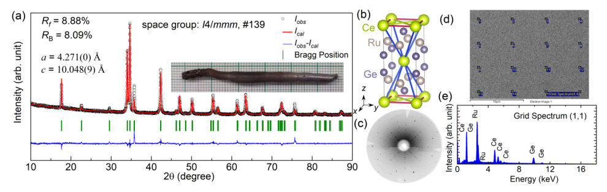
<figcaption class="paper-figure-caption"><b>Fig 1.</b> FIG. 1. (a) Room temperature powder X-ray diffraction pattern of CeRu2Ge2, as grown crystal is shown in the inset. (b) Crystal structure (using VESTA package [5]), nearest neighours, second nearest neighours and third nearest neighours are shown in lime, blue and ruby colors, respectively. (c) The back-reflected Laue pattern on the (001) plane. (d) Angle Selective Backscattered (ASB) image showing 16 point spatial array grid from which EDS was obtained. (e) EDS spectrum.</figcaption>
</figure>
<figure class="paper-figure-card">
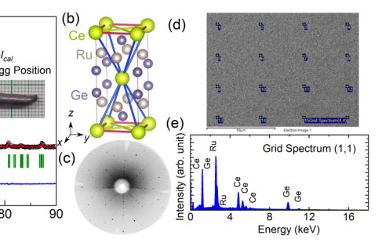
<figcaption class="paper-figure-caption"><b>Fig 2.</b> Figure 1 shows room temperature powder XRD pat- tern along with the simulated one with the Rietveld refinement. The refinement shows that the compound crystallizes in centrosymmetric I4/mmm (#139) space group, where the Wyckoff positions of the Ce, Ru, and Ge atoms are 2a (0, 0, 0), 4d (0, 0.5, 0.25), and 4e (0, 0, 0.3682), respectively. The structural details are in good agreement with the previous report [15]. The compositional study using the EDS spectra indi- cates average atomic percentages of Ce, Ru, and Ge to be 19.87(±0.15), 41.99(±0.27), and 38.14(±0.38), re- spectively, which are in good agreement with the nom- inal 1:2:2 stoichiometry. The Ce atoms in the (001) plane form a...</figcaption>
</figure>
<figure class="paper-figure-card">
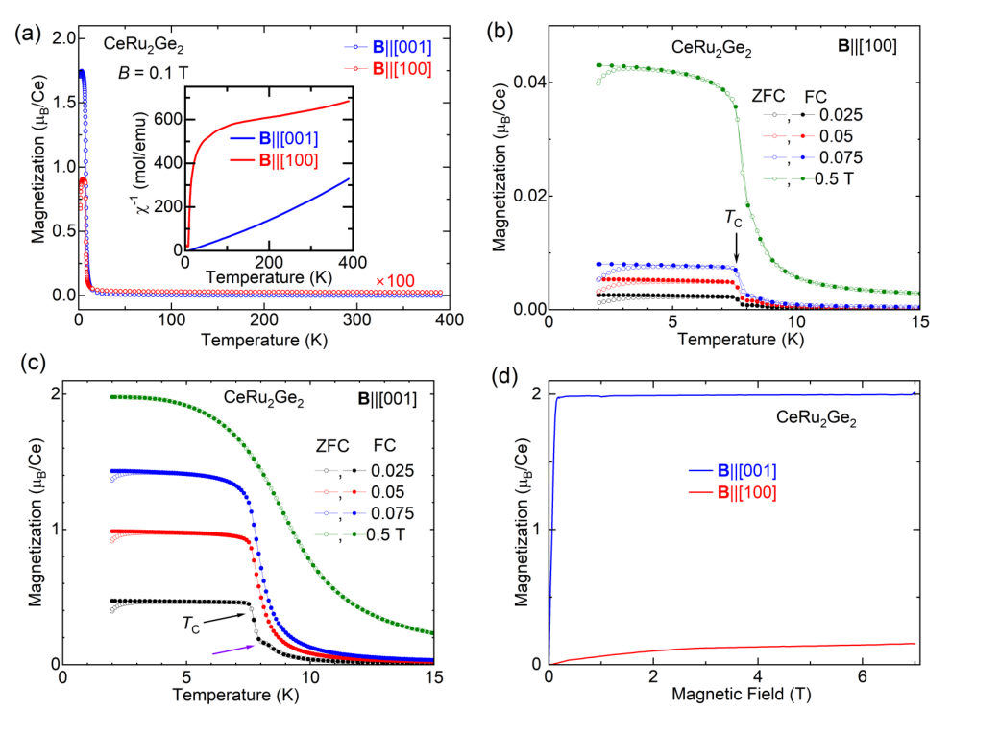
<figcaption class="paper-figure-caption"><b>Fig 3.</b> FIG. 2. (a) Magnetization as a function of temperature, with magnetic field (B = 0.1 T) applied on B ∥[001], and B ∥[100] directions. Inset shows the inverse susceptibility along both the directions. Magnetization at different applied magnetic field along (b) B ∥[001], and (c) B ∥[100] directions. The magenta arrow indicates TN. (d) Isothermal magnetization at T = 2 K along B ∥[001] and B ∥[100] directions.</figcaption>
</figure>
<figure class="paper-figure-card">
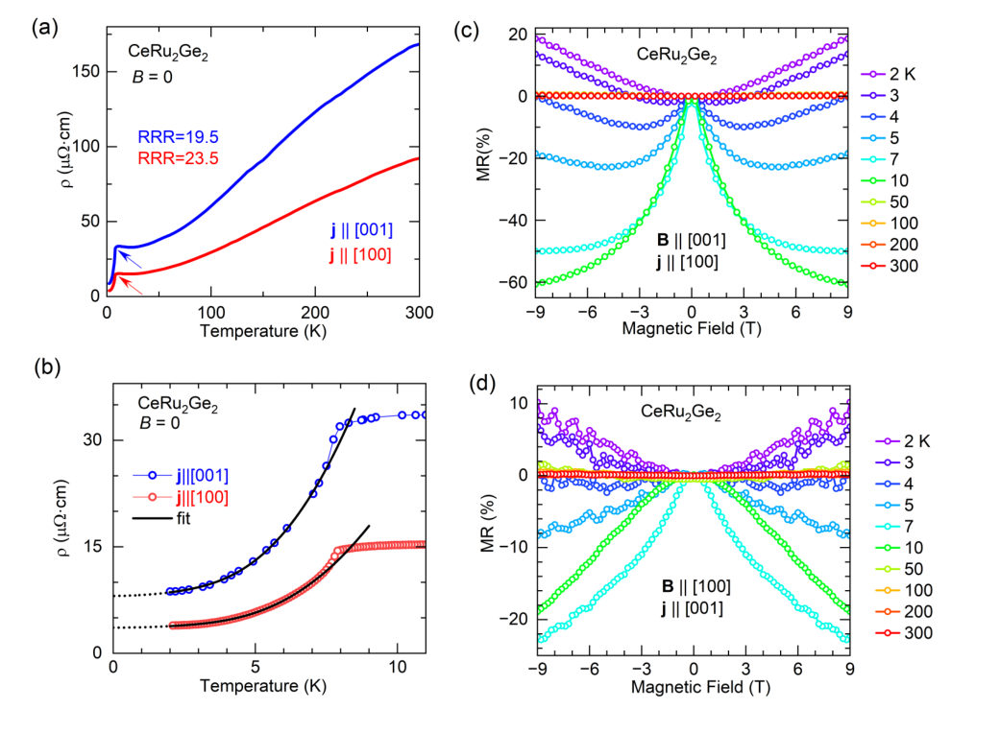
<figcaption class="paper-figure-caption"><b>Fig 4.</b> FIG. 3. (a) ρ(T) along j ∥[001] and j ∥[100] direction. The arrows indicate TC. (b) Low temperature resistivity along with the magnon-gap fitting. Magnetoresistance at different temperatures along (c) B ∥[001] and, (d) B ∥[100] directions.</figcaption>
</figure>
<figure class="paper-figure-card">
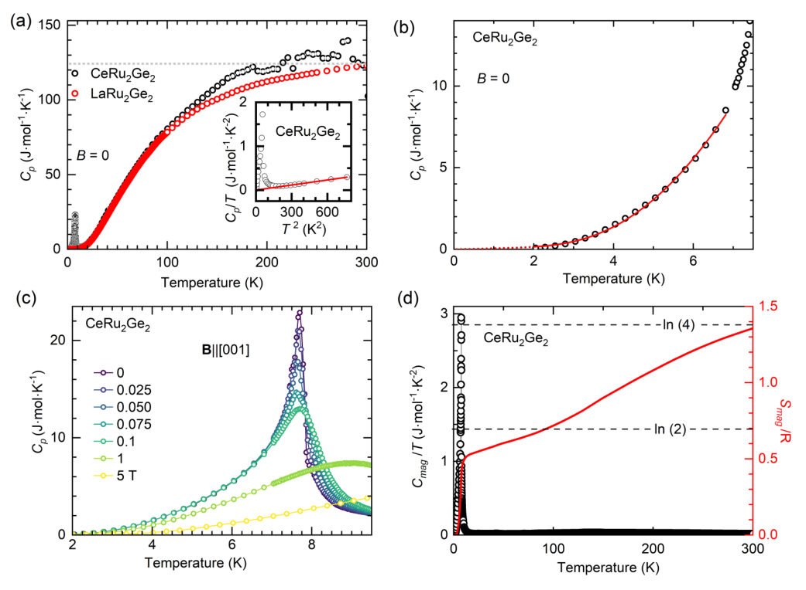
<figcaption class="paper-figure-caption"><b>Fig 5.</b> FIG. 4. (a) Heat capacity of CeRu2Ge2 and LaRu2Ge2 at B = 0. The gray dotted line represents 3nR = 124 J·mol−1·K−1. The inset shows Cp/T vs. T 2 in the low temperature region (b) Cp vs. T below ordering temperature and fit with magnon excitation energy. (c) Cp(T) at different applied magnetic fields. (d) Cmag/T, and Smag/R as a function of temperature in the left and right-axis respectively.</figcaption>
</figure>
</div>
<p><strong>Summary.</strong> This paper presents a comprehensive study of the magnetic and transport properties of the ferromagnetic material CeRu2Ge2. By applying Crystal Electric Field (CEF) theory to experimental data from magnetization, resistivity, and specific heat, the authors successfully explain the observed magnetic anisotropy. The work highlights that the magnetic easy axis is dictated by the CEF ground state, providing a detailed picture of local moment magnetism in this correlated material.</p>
<p><strong>Why it may be interesting.</strong> The detailed analysis of magnetic anisotropy and the successful application of CEF theory to explain the magnetic ground state in a heavy fermion ferromagnet provides insights into how crystal symmetry dictates magnetic ordering in correlated electron systems.</p>
<details>
<summary>Detailed structure</summary>
<p><strong>Main problem.</strong> To conduct a detailed anisotropic study on the magnetic and transport properties of the ferromagnetic single crystal CeRu2Ge2 and explain the observed phenomena using the Crystal Electric Field (CEF) framework.</p>
<p><strong>Main result.</strong> The magnetic anisotropy and overall magnetic behavior are quantitatively explained by the CEF model, showing the easy axis aligns along the [001] direction, consistent with the CEF ground state.</p>
<p><strong>Method.</strong> The study combines multiple experimental techniques (magnetization, resistivity, specific heat) with theoretical analysis using the point-charge Crystal Electric Field (CEF) model.</p>
<p><strong>Model / system.</strong> The physical system is the CeRu2Ge2 single crystal, which is analyzed using the CEF Hamiltonian, which is fitted to experimental data to determine the electronic energy level scheme.</p>
<p><strong>Key observables.</strong> Ferromagnetic transition temperature (Tc = 7.5 K), positive magnetoresistance, magnon excitation gap, magnetic susceptibility anisotropy ([100] vs [001]), and CEF energy levels (three doublets).</p>
<p><strong>Important parameters / regimes.</strong> CEF parameters (e.g., B2^0 = -25 K), molecular field constants (lambda_x, lambda_z), and the magnon gap energy (Delta).</p>
<p><strong>Assumptions / limitations.</strong> The analysis relies on the point-charge CEF model, and the interpretation of large negative molecular field constants as anisotropic exchange rather than direct antiferromagnetic exchange.</p>
<p><strong>Figures summary.</strong> Figures show XRD patterns, magnetization vs. T/B curves along different axes, resistivity vs. T curves with magnon-gap fits, and MR vs. B plots.</p>
<p><strong>Paper structure.</strong> The paper progresses from structural characterization and basic magnetic/transport measurements to detailed CEF analysis using specific heat (Schottky effect) and susceptibility data, culminating in a full explanation of the magnetic anisotropy.</p>
</details>
<details>
<summary>Abstract</summary>
<p>We report a detailed anisotropic studies on the magnetic and transport properties of a CeRu$_2$Ge$_2$ single crystal. A clear ferromagnetic transition is observed at $T_{\rm C} = 7.5$~K in the magnetic susceptibility, electrical resistivity and heat capacity measurements. The magnetoresistance (MR) is positive at low temperature within the magnetically ordered state. We confirmed the presence of a magnon excitation gap in the resistivity, MR and the low temperature heat capacity data. The pronounced anisotropy observed in the magnetic susceptibility and magnetization along the [100] and [001] directions is quantitatively explained within the crystal electric field (CEF) framework using the point-charge model. The analysis reveals a CEF level scheme comprising three doublets, with a ground state and two excited states at 491 and 671~K, that was further confirmed from the Schottky effect in the magnetic part of the heat capacity data. Unlike most Kondo lattice ferromagnets of Ce compounds, where the magnetic easy axis deviates from the expected CEF ground state, CeRu$_2$Ge$_2$ exhibits magnetization, which is fully consistent with the CEF derived ground state wave function, with the easy axis of magnetization aligned along the [001] direction.</p>
</details>
<p><sub><a href="#top">↑ back to top</a></sub></p>

<p><a id="paper-2609.26392"></a></p>
<h3 id="double-descent-and-malign-overfitting-in-diffusion-models"><a href="http://arxiv.org/abs/2609.26392v1">Double Descent and Malign Overfitting in Diffusion Models</a></h3>
<p><strong>Authors:</strong> Raphaël Urfin, Tony Bonnaire, Giulio Biroli, Marc Mézard<br>
<strong>Type:</strong> theory · <strong>Category:</strong> disordered systems and neural networks · <strong>PDF:</strong> <a href="https://arxiv.org/pdf/2609.26392v1">https://arxiv.org/pdf/2609.26392v1</a><br>
<strong>Analysis basis:</strong> full PDF text, analyzed in chunks</p>
<div class="figure-strip-hint">↔ Scroll figures horizontally</div>
<div class="paper-figures-scroll">
<figure class="paper-figure-card">
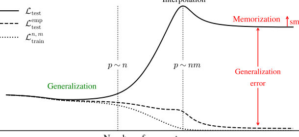
<figcaption class="paper-figure-caption"><b>Fig 1.</b> Figure 1: Qualitative summary of our results. Sketch of the standard test loss Ltest (solid), the empirical test loss Lemp test (dashed), and the training loss Ln,m train (dotted) versus the number of parameters p, for a diffusion model trained on n samples with m &gt; 1 noise realizations each. Ltest reaches its minimum before p ∼n, where the model can generalize, then rises to a peak at the interpolation threshold p ∼nm, where Ln,m train reaches 0 (shifted from p ∼n, its value in the regression setting m = 1). For p ≫nm, the test loss decreases a second time (double descent) but settles on a plateau that lies above its earlier minimum, whereas Lemp test decreases toward zero, more so the...</figcaption>
</figure>
<figure class="paper-figure-card">
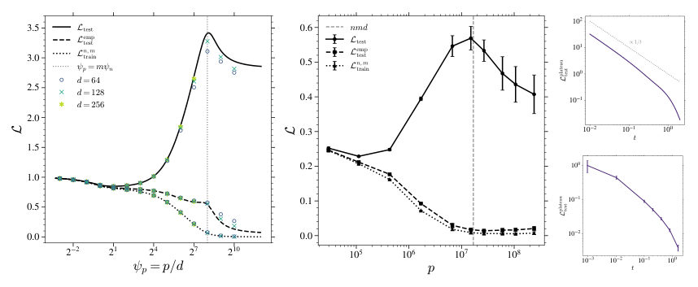
<figcaption class="paper-figure-caption"><b>Fig 2.</b> Figure 2: Double descent in Diffusion Models. (Left) Losses vs. ψp = p/d for an RFNN with Gaussian data at ψn = n/d = 16, m = 16, t = 0.1, λ = 10−3; black curves are the predictions of Theorem 2.1, markers the RFNN trained with Adam on Eq. 2 with ridge penalty λ∆t∥A∥2 F /(dp), averaged over 10 runs. (Middle) Losses vs. p for U-Nets trained on CelebA at n = 2048, m = 8, evaluated at t ≈0.01; error bars are ±3SE over 6 initial seeds. (Right) Large p plateau value of the test loss vs. t for the RFNN (top) and the U-Net (bottom), W = 128, p ≈106M.</figcaption>
</figure>
<figure class="paper-figure-card">
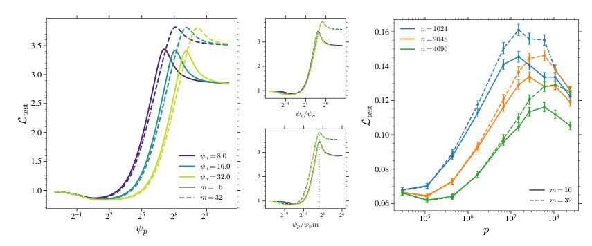
<figcaption class="paper-figure-caption"><b>Fig 3.</b> Figure 3: Effects of n and m on the double descent. (Left) RFNN test loss vs. ψp for several ψn and m, at t = 0.1, λ = 10−3, σ = tanh. (Middle) Same, with the x-axis rescaled by ψn (top) and ψnm (bottom). (Right) U-Net test loss vs. p for several m at t ≈0.1; error bars are ±3SE of one seed over test sets.</figcaption>
</figure>
<figure class="paper-figure-card">
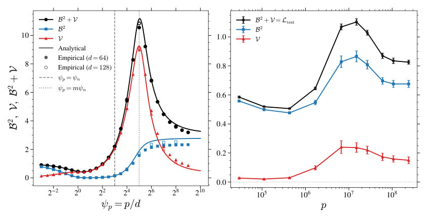
<figcaption class="paper-figure-caption"><b>Fig 4.</b> Figure 4: Bias and variance of the score estimator. (Left) Bias and variance for the RFNN model vs. ψp for ψn = 8, t = 0.1, m = 4, λ = 10−3, σ = tanh and several values of d. Solid curves are the analytical predictions from Theorem 2.1; markers are numerical estimates from 10 independent runs. (Right) Bias and variance for U-Net models as a function of p (n = 2048, m = 4, evaluated at t ≈0.01). Error bars correspond to ±3SE over 10 models trained on disjoint datasets.</figcaption>
</figure>
<figure class="paper-figure-card">
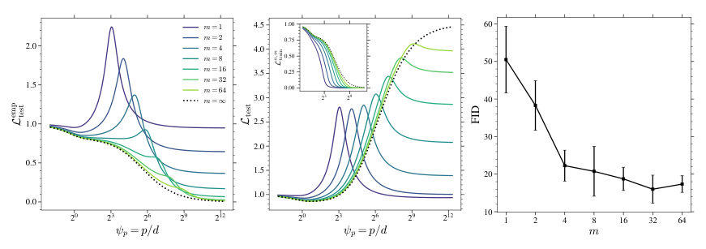
<figcaption class="paper-figure-caption"><b>Fig 5.</b> Figure 5: Effect of m on the double descent. (Left) Empirical test loss Lemp test and (Middle) test loss Ltest vs ψp for an RFNN at several m, with ψn = n/d = 8, t = 0.1, λ = 10−3, σ = tanh; inset: training loss. (Right) FID vs m for early-stopped U-Nets trained on CelebA at n = 16384, W = 32; error bars are ±3SE over 5 seeds.</figcaption>
</figure>
</div>
<p><strong>Summary.</strong> This paper investigates why diffusion models exhibit 'malign overfitting'—a failure mode worse than expected—despite being fundamentally regression-like. By analyzing the bias and variance of the score estimator, the authors show that the model memorizes training data rather than learning the true underlying distribution. They conclude that while overparameterization is powerful, it requires explicit regularization to prevent catastrophic generalization failure.</p>
<p><strong>Why it may be interesting.</strong> The work provides a deep theoretical understanding of generalization failure in complex generative models, drawing parallels between statistical physics concepts (like phase transitions or critical points) and machine learning generalization boundaries.</p>
<details>
<summary>Detailed structure</summary>
<p><strong>Main problem.</strong> The paper addresses the paradox of 'malign overfitting' observed in diffusion models, contrasting it with the expected 'benign overfitting' from standard deep learning regression.</p>
<p><strong>Main result.</strong> Overfitting in diffusion models is malignant because the implicit regularization drives the model to memorize the empirical score rather than the true underlying score, which is mitigated only by explicit regularization.</p>
<p><strong>Method.</strong> The analysis combines theoretical derivations using random-features models (Gaussian Equivalence Principle) with empirical studies on U-Nets, employing bias-variance decomposition to pinpoint the failure mechanism.</p>
<p><strong>Model / system.</strong> The system studied is the training of diffusion models (like DDPM-style U-Nets) to estimate the score function of an Ornstein-Uhlenbeck process. The theory is rigorously tested using Random Feature Neural Networks (RFNNs).</p>
<p><strong>Key observables.</strong> Test loss ($L_{	ext{test}}$), Empirical test loss ($L_{	ext{emp}}^{	ext{test}}$), Training loss ($L_{n,m}^{	ext{train}}$), Bias, and Variance.</p>
<p><strong>Important parameters / regimes.</strong> Model size ($p$), sample size ($n$), noise realizations ($m$), and regularization strength ($\lambda$).</p>
<p><strong>Assumptions / limitations.</strong> The theoretical analysis often relies on the high-dimensional limit ($p, n, d \gg 1$) and specific asymptotic approximations.</p>
<p><strong>Figures summary.</strong> Figures illustrate the double descent curve, showing the divergence between $L_{	ext{test}}$ and $L_{	ext{emp}}^{	ext{test}}$ in the overparameterized regime, and demonstrating that regularization restores optimal performance.</p>
<p><strong>Paper structure.</strong> The paper establishes the paradox, develops theoretical tools (RFNN analysis), diagnoses the mechanism via bias/variance decomposition, and concludes by showing that regularization is necessary to restore beneficial overparameterization.</p>
</details>
<details>
<summary>Abstract</summary>
<p>Conventional wisdom in deep learning holds that overparameterization---having more parameters $p$ than training samples $n$---is benign: larger models generalize better and, even without regularization, interpolating models generalize well, the test error following a double-descent curve. One might expect the same benign overfitting for diffusion models, whose training reduces to regression, i.e. to minimizing a quadratic score-matching loss. Yet the opposite is observed: overfitting here is catastrophic, driving the model into a memorization regime. We resolve this paradox by combining experiments on U-Nets trained on CelebA with a random-features model for which we derive closed-form learning curves. We show that with a fixed number $m$ of noise realizations per training sample, an interpolation peak does occur, but at $p\sim nm$ rather than at $p\sim n$ as in standard regression. The rise of the test loss, however, sets in much earlier, at $p\sim n$, independently of $m$. This overfitting is malign because, although the implicit regularization of training is fully at work, it drives the model toward the empirical score, which memorizes the training set, rather than toward the true score. A bias-variance decomposition pinpoints the mechanism: the bias of the score estimator starts to grow at $p\sim n$; past the peak the variance decays, as in regression, whereas the bias keeps growing and both saturate at a large value. Since diffusion models are trained with $m\gg1$, the peak is pushed to very large model sizes, and therefore sit on the rising branch that precedes it, where malign overfitting is already in play. Nevertheless, overparameterization remains beneficial when paired with regularization: in the random-features theory and in U-Net experiments, optimally regularized large models---via a ridge penalty or early stopping, respectively---outperform any unregularized models.</p>
</details>
<p><sub><a href="#top">↑ back to top</a></sub></p>

<p><a id="paper-2609.26660"></a></p>
<h3 id="error-correction-properties-of-covariant-bosonic-encodings"><a href="http://arxiv.org/abs/2609.26660v1">Error Correction Properties of Covariant Bosonic Encodings</a></h3>
<p><strong>Authors:</strong> Frederic St-Amand, Jean-Philippe Burelle, Baptiste Royer<br>
<strong>Type:</strong> theory · <strong>Category:</strong> quantum information and computing · <strong>PDF:</strong> <a href="https://arxiv.org/pdf/2609.26660v1">https://arxiv.org/pdf/2609.26660v1</a><br>
<strong>Analysis basis:</strong> full PDF text, analyzed in chunks</p>
<div class="figure-strip-hint">↔ Scroll figures horizontally</div>
<div class="paper-figures-scroll">
<figure class="paper-figure-card">
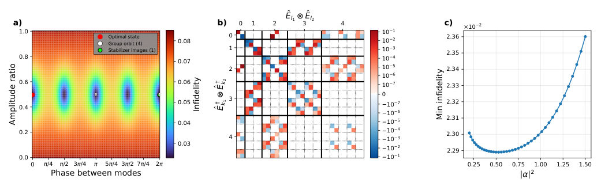
<figcaption class="paper-figure-caption"><b>Fig 1.</b> FIG. 1. Error-correction performance of the two-mode quaternion (Q8) code with logical representation λ ∼= ρ2 ⊕ρ4, evaluated against the amplitude damping channel for γ = 0.095. a) Near-optimal infidelity, 1 −˜F, Eq. (15) as a function of the initial coherent state |√rα, √1 −reiθα⟩where r is the energy ratio between the first mode and the total energy and θ is the relative phase between modes. The near-optimal fidelity is plotted for the optimal initial state energy and results in 1 −˜F ≈0.023. b) Uncorrectable part of the QEC matrix plotted for the optimal initial parameters r = 0.5, θ = 0 and |α|2 ≈0.528. Rows and columns are indexed by the two-mode loss label ˆE† k1 ⊗ˆE† k2 and ˆEl1...</figcaption>
</figure>
<figure class="paper-figure-card">
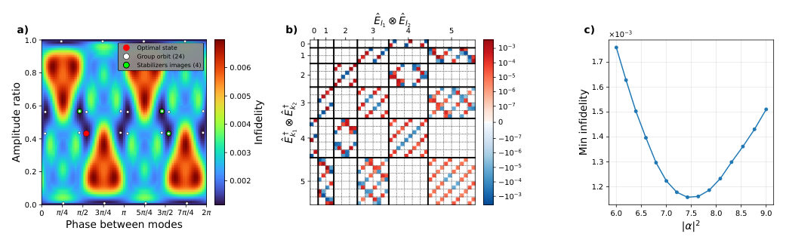
<figcaption class="paper-figure-caption"><b>Fig 2.</b> FIG. 2. Error-correction performance of the two-mode binary octahedral group (2O) code with logical representation λ ∼= ρ1⊕ρ2, evaluated against the amplitude damping channel. a) Near-optimal infidelity, 1−˜F, Eq. (15) as a function of the initial coherent state |√rα, √1 −reiθα⟩where r is the energy ratio between the first mode and the total energy and θ is the relative phase between modes. The near-optimal fidelity is plotted for the optimal initial state energy and results in 1 −˜F ≈0.0009. b) Uncorrectable part of the QEC matrix for loss-rate γ = 0.095 plotted for the optimal initial parameters r ≈0.47, θ ≈1.33 rad and |α|2 ≈6.31. Rows and columns are indexed by the two-mode loss label...</figcaption>
</figure>
<figure class="paper-figure-card">
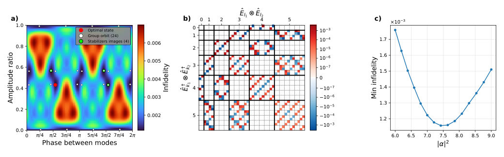
<figcaption class="paper-figure-caption"><b>Fig 3.</b> FIG. 3. Error-correction performance of the two-mode binary octahedral group (2O) code with logical representation λ ∼= ρ3, evaluated against the amplitude damping channel. a) Near-optimal infidelity, 1−˜F, Eq. (15) as a function of the initial coherent state |√rα, √1 −reiθα⟩where r is the energy ratio between the first mode and the total energy and θ is the relative phase between modes. The near-optimal fidelity is plotted for the optimal initial state energy and results in 1 −˜F ≈0.0012. b) Uncorrectable part of the QEC matrix for loss-rate γ = 0.095 plotted for the optimal initial parameters r ≈0.43, θ ≈1.7 rad and |α|2 ≈7.42. Rows and columns are indexed by the two-mode loss label ˆE†...</figcaption>
</figure>
<figure class="paper-figure-card">
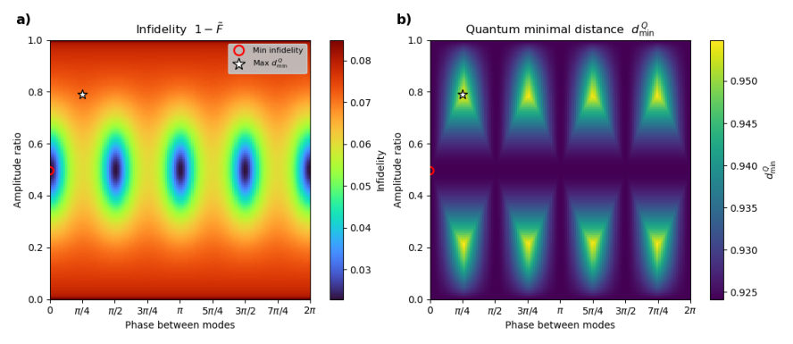
<figcaption class="paper-figure-caption"><b>Fig 4.</b> FIG. 4. Comparison of the amplitude-damping infidelity and the quantum minimal distance over the seed-state parameters at fixed energy |α|2 = 0.528 for the group Q8 and logical representation λ ∼= ρ2 ⊕ρ4.</figcaption>
</figure>
<figure class="paper-figure-card">
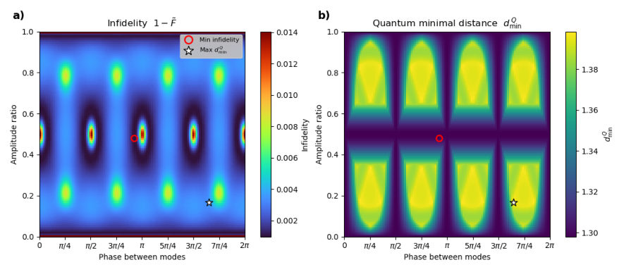
<figcaption class="paper-figure-caption"><b>Fig 5.</b> FIG. 5. Comparison of the amplitude-damping infidelity and the quantum minimal distance over the seed-state parameters at fixed energy |α|2 = 6.31 for the group 2O and logical representation λ ∼= ρ1 ⊕ρ2.</figcaption>
</figure>
</div>
<p><strong>Summary.</strong> This paper develops a rigorous, representation-theoretic framework to analyze bosonic quantum error-correcting codes. By viewing the QEC matrix as a group representation morphism, the authors systematically analyze how these codes protect against noise like photon loss. This provides a powerful theoretical tool for designing hardware-efficient fault-tolerant quantum memories.</p>
<p><strong>Why it may be interesting.</strong> This work provides a powerful, abstract mathematical tool (representation theory) to analyze physical error correction codes in bosonic systems, which is highly relevant for quantum optics and superconducting circuit implementations.</p>
<details>
<summary>Detailed structure</summary>
<p><strong>Main problem.</strong> The paper aims to develop a general framework for constructing and analyzing the error-correction properties of covariant bosonic codes.</p>
<p><strong>Main result.</strong> The analysis shows that the Quantum Error Correction (QEC) matrix can be viewed as a morphism of group representations, allowing for the systematic study of error protection for various bosonic codes.</p>
<p><strong>Method.</strong> The authors employ a representation-theoretic framework, defining codewords via a covariant encoding that acts as a morphism between logical and physical group representations.</p>
<p><strong>Model / system.</strong> The system involves bosonic modes, where logical information is encoded in the infinite-dimensional Hilbert space. The analysis focuses on error protection against amplitude damping channels (photon loss) using finite subgroups of SU(2).</p>
<p><strong>Key observables.</strong> The QEC matrix ($Q_{kl}$) and the near-optimal fidelity ($  ilde{F}$) are key diagnostics used to quantify the code's robustness.</p>
<p><strong>Important parameters / regimes.</strong> The analysis involves parameters related to the size of the group representations ($d_L, N$) and the order of the error operators.</p>
<p><strong>Assumptions / limitations.</strong> The primary assumption is the applicability of the representation-theoretic view of QEC, and the analysis relies on using the computationally tractable near-optimal fidelity ($ ilde{F}$) instead of the optimal fidelity ($F_{   ext{opt}}$).</p>
<p><strong>Paper structure.</strong> The paper builds from preliminaries on Representation Theory and Covariant Encoding (Section II) to establish the general framework connecting the QEC matrix to group representation morphisms (Section III). Appendices detail proofs regarding the action of group elements on single-photon states and the structure of the QEC matrix.</p>
</details>
<details>
<summary>Abstract</summary>
<p>Bosonic codes offer a promising approach towards hardware-efficient fault tolerance, with many leading examples such as the cat-code and the GKP code organized by an underlying symmetry. We build on a representation-theoretic framework of quantum error correction to formalize the construction and analysis of multimode symmetric bosonic codes, focusing on finite groups. Here, a physical, logical representation and an initial seed state together define the codewords via a covariant encoding. A central observation is that QEC matrices can be viewed as morphisms of group representations, so that Schur's lemma forces entire irreducible representations blocks to vanish. We recover several known single- and two-mode bosonic codes and build and analyze the error protection capabilities of three codes based on finite subgroups of SU(2). We analyze the impact of reducibility of the logical representation and optimize the seed state using the near-optimal fidelity.</p>
</details>
<p><sub><a href="#top">↑ back to top</a></sub></p>

<p><a id="paper-2609.26784"></a></p>
<h3 id="error-suppression-in-distributed-quantum-computing-with-heterogeneous-distance-lattice-surgery"><a href="http://arxiv.org/abs/2609.26784v1">Error Suppression in Distributed Quantum Computing with Heterogeneous-Distance Lattice Surgery</a></h3>
<p><strong>Authors:</strong> Daniel Dilley, Anastashia Jebraeilli, Rayat Roy, Shobhit Gupta, Alvin Gonzales, Zain Saleem<br>
<strong>Type:</strong> theory · <strong>Category:</strong> quantum information and computing · <strong>PDF:</strong> <a href="https://arxiv.org/pdf/2609.26784v1">https://arxiv.org/pdf/2609.26784v1</a><br>
<strong>Analysis basis:</strong> full PDF text, analyzed in chunks</p>
<div class="figure-strip-hint">↔ Scroll figures horizontally</div>
<div class="paper-figures-scroll">
<figure class="paper-figure-card">
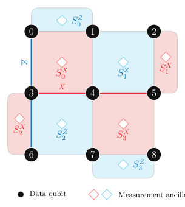
<figcaption class="paper-figure-caption"><b>Fig 1.</b> FIG. 1. Distance-3 rotated surface code patch and its stabi- lizer generators. The red horizontal path represents XL = X, and the blue vertical path represents ZL = Z.</figcaption>
</figure>
<figure class="paper-figure-card">
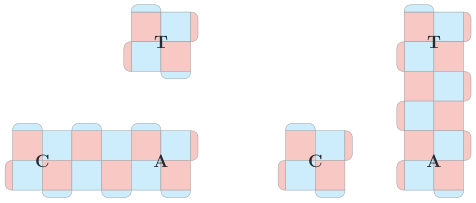
<figcaption class="paper-figure-caption"><b>Fig 2.</b> FIG. 2. Merge configurations for the two joint parity mea- surements in a distance-3 lattice surgery lCNOT: (a) ZCZA and (b) XAXT . Red and blue plaquettes denote X- and Z- type stabilizers, respectively.</figcaption>
</figure>
<figure class="paper-figure-card">
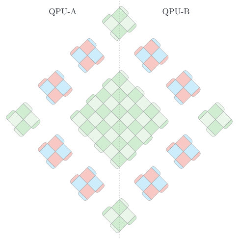
<figcaption class="paper-figure-caption"><b>Fig 3.</b> FIG. 3. 8-DAM patch architecture rotated by 45◦. The verti- cal gray dotted line marks the inter-QPU boundary separating QPU-A and QPU-B.</figcaption>
</figure>
<figure class="paper-figure-card">
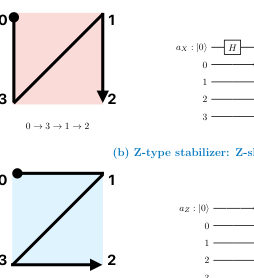
<figcaption class="paper-figure-caption"><b>Fig 4.</b> FIG. 4. Conventional CNOT stabilizer scheduling and their corresponding measurement circuits in a rotated surface code. (a) The X-type stabilizers (red, top) follow an “N” shaped order 0 →3 →1 →2, with the syndrome qubit controlling each CNOT. (b) The Z-type stabilizer (blue, bottom) follows the “Z” shaped order 0 →1 →3 →2, with syndrome qubits as the CNOT target.</figcaption>
</figure>
<figure class="paper-figure-card">
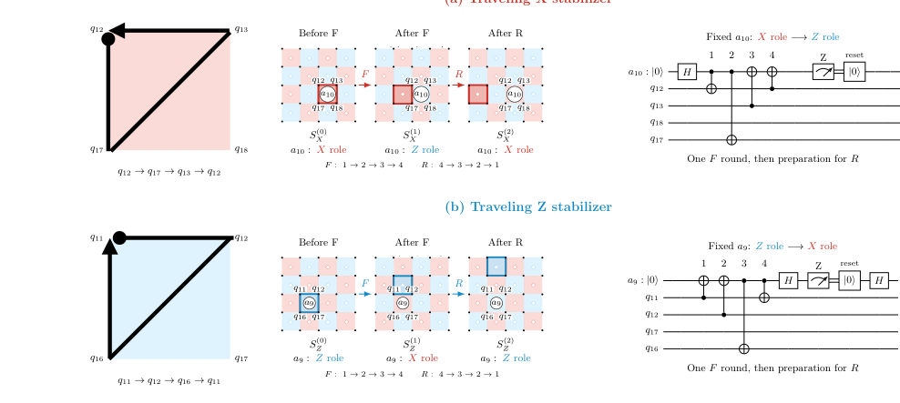
<figcaption class="paper-figure-caption"><b>Fig 5.</b> FIG. 5. Traveling stabilizer construction for (a) X-type (red, top) and (b) Z-type (blue, bottom) checks. Black circles labeled qj represent data qubits; aj represent syndrome qubits. The left panels show the local CNOT interaction order during a forward (F) round, with physical-qubit labels matching the checkerboard snapshots and circuits. The central panels show the successive supports S(0) P , S(1) P , and S(2) P , with P ∈{X, Z}, before F, after F, and after a reverse (R) round. The F and R rounds apply the four CNOT layers in the orders 1, 2, 3, 4 and 4, 3, 2, 1, respectively. The highlighted X supports move leftward and the Z supports move upward as the checkerboard alternates, while...</figcaption>
</figure>
</div>
<p><strong>Summary.</strong> This paper proposes a resource-efficient method called heterogeneous-distance lattice surgery for fault-tolerant quantum computing across noisy links. By selectively enlarging the ancilla at the inter-QPU boundary while keeping data patches smaller, the authors significantly reduce physical qubit overhead compared to standard methods. Simulations show this approach maintains excellent error suppression even as link noise increases.</p>
<p><strong>Why it may be interesting.</strong> This work directly addresses the scaling bottleneck in quantum computing by providing a resource-efficient error correction scheme for noisy, modular interconnects, which is crucial for realizing large-scale quantum processors.</p>
<details>
<summary>Detailed structure</summary>
<p><strong>Main problem.</strong> The primary challenge is achieving fault-tolerant quantum operations across inter-QPU links, which are significantly noisier than local gates in distributed quantum computing architectures.</p>
<p><strong>Main result.</strong> The proposed heterogeneous-distance lattice surgery (8-DAM) architecture maintains low logical error rates at high link noise while significantly reducing the physical qubit overhead compared to uniform-distance implementations.</p>
<p><strong>Method.</strong> The authors introduce a novel lattice surgery protocol using an enlarged central ancilla and traveling stabilizers to suppress hook errors during merge/split operations between unequal-distance data patches.</p>
<p><strong>Model / system.</strong> The model uses the rotated surface code implemented across modular Quantum Processing Units (QPUs) connected by noisy inter-QPU links. The core technique is the 8-DAM architecture, where the central ancilla is enlarged while data patches retain a smaller, fixed distance $d$.</p>
<p><strong>Key observables.</strong> Logical-readout error rates, physical qubit overhead (qubit count), and the comparison of error suppression factors against uniform-distance lattice surgery.</p>
<p><strong>Important parameters / regimes.</strong> Local depolarizing noise ($ ext{p}<em ext_link="ext{link">{    ext{local}}$), inter-QPU link noise ($  ext{p}</em>$), and the specific distance parameters used in the heterogeneous construction (e.g., $3	ext{--}7	ext{--}3$).}</p>
<p><strong>Assumptions / limitations.</strong> The analysis assumes that local QPU operations are fault-tolerant if the distance is high enough, and it specifically excludes modeling link-generation failures, leakage, or correlated link noise.</p>
<p><strong>Figures summary.</strong> Figures illustrate the geometry of the rotated surface code patches, the merge configurations for lattice surgery, and the resulting 8-DAM patch architecture, along with error rate comparisons for single and dual logical CNOT operations.</p>
<p><strong>Paper structure.</strong> The paper reviews background on rotated surface codes and lattice surgery, presents the heterogeneous 8-DAM constructions and simulation results, and concludes by discussing the resource-efficient implications for fault-tolerant distributed quantum computing.</p>
</details>
<details>
<summary>Abstract</summary>
<p>Distributed quantum computing requires fault-tolerant operations across inter-QPU links that can be substantially noisier than local gates. Uniformly increasing code distance provides additional protection but also enlarges data patches used for local storage and computation. Here, we introduce distributed heterogeneous-distance lattice surgery using an eight-data-patch ancilla-mediated (8-DAM) architecture, which will be useful for near-term quantum devices with less qubit overhead. In this architecture, the central ancilla spanning the inter-QPU boundary is enlarged while the data patches retain distance $d$. The protocol uses traveling stabilizers to suppress hook errors during merge and split operations between these unequal-distance patches. Circuit-level simulations of rotated surface codes at fixed local depolarizing noise show that logical-readout error rates depend only weakly on link noise. The resulting advantage over conventional lattice surgery grows as link errors increase. Comparisons with uniform distance implementations demonstrate comparable logical error suppression with reduced physical-qubit overhead. We also demonstrate how 8-DAM layouts support two simultaneous distributed logical CNOT operations between four logical data qubits using a single enlarged ancilla. At higher link noise, this construction yields lower logical error rates and more stability than two independent distributed logical CNOTs. These results support selective ancilla enlargement as a resource-efficient approach to fault-tolerant distributed quantum computing.</p>
</details>
<p><sub><a href="#top">↑ back to top</a></sub></p>

<p><a id="paper-2609.25251"></a></p>
<h3 id="exploring-asymmetric-qec-code-concatenation"><a href="http://arxiv.org/abs/2609.25251v1">Exploring Asymmetric QEC Code Concatenation</a></h3>
<p><strong>Authors:</strong> Sayam Sethi, Maxwell Poster, Aditi Awasthi, Willers Yang, Joshua Viszlai, Jonathan Mark Baker<br>
<strong>Type:</strong> theory · <strong>Category:</strong> quantum information and computing · <strong>PDF:</strong> <a href="https://arxiv.org/pdf/2609.25251v1">https://arxiv.org/pdf/2609.25251v1</a><br>
<strong>Analysis basis:</strong> full PDF text, analyzed in chunks</p>
<div class="figure-strip-hint">↔ Scroll figures horizontally</div>
<div class="paper-figures-scroll">
<figure class="paper-figure-card">
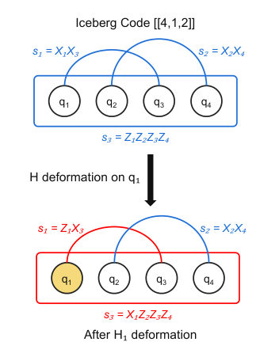
<figcaption class="paper-figure-caption"><b>Fig 1.</b> Fig. 1: The [[4, 1, 2]] Iceberg code and the effect of a Clifford deformation. Top: the code on four data qubits, with two weight-2 X checks (s1, s2) and one weight-4 Z check (s3). Bottom: conjugating q1 by a Hadamard swaps X ↔Z on that qubit, turning s1 and s3 into mixed-type checks</figcaption>
</figure>
<figure class="paper-figure-card">
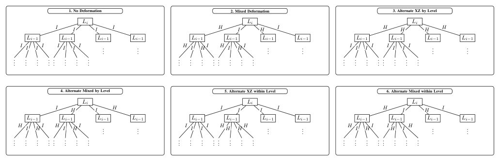
<figcaption class="paper-figure-caption"><b>Fig 2.</b> Fig. 2: The six deformation strategies of Section III-A. Each node is an Iceberg block at some concatenation level Li; edge labels (I or H) give the per-qubit Hadamard deformation applied to that block.</figcaption>
</figure>
<figure class="paper-figure-card">
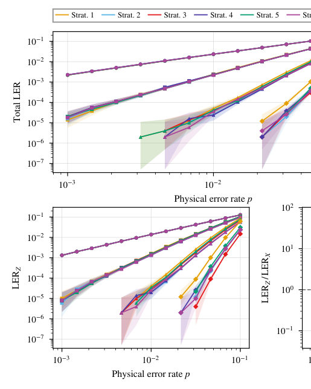
<figcaption class="paper-figure-caption"><b>Fig 3.</b> Fig. 3: LER under unbiased noise across one to four levels of concatenation.</figcaption>
</figure>
<figure class="paper-figure-card">
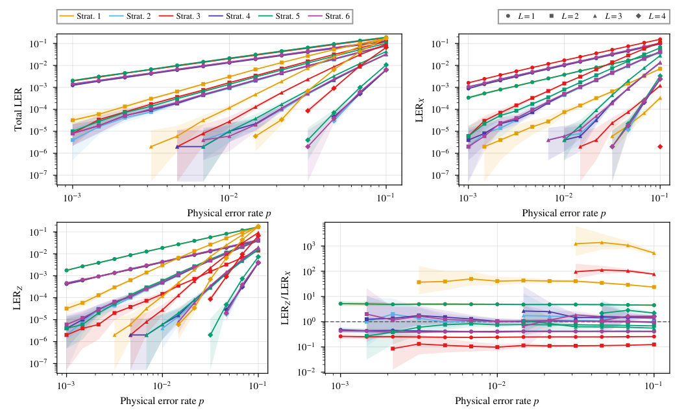
<figcaption class="paper-figure-caption"><b>Fig 4.</b> Fig. 4: LER under X-biased noise (with X errors being 8× more likely than Z and Y errors) across one to four levels of concatenation.</figcaption>
</figure>
<figure class="paper-figure-card">
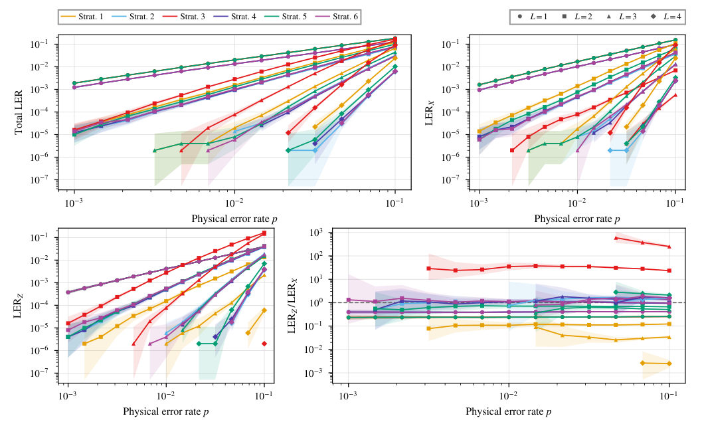
<figcaption class="paper-figure-caption"><b>Fig 5.</b> Fig. 5: LER under Z-biased noise (with Z errors being 8× more likely than X and Y errors) across one to four levels of concatenation</figcaption>
</figure>
</div>
<p><strong>Summary.</strong> This paper investigates how to improve concatenated quantum error-correcting codes by mitigating the inherent asymmetry between X and Z error channels. The authors propose and test six specific 'deformation' strategies applied to the building block code. They demonstrate that careful deformation can balance the X and Z logical error rates while improving the overall error suppression capability.</p>
<p><strong>Why it may be interesting.</strong> The work directly addresses resource optimization in quantum error correction by providing concrete, structured methods (deformations) to mitigate systematic biases in logical error rates, which is crucial for scaling quantum computation.</p>
<details>
<summary>Detailed structure</summary>
<p><strong>Main problem.</strong> Concatenated Quantum Error-Correcting Codes (QECC) suffer from logical error rate (LER) skewness between X and Z observables due to the inherent asymmetry of the building block code.</p>
<p><strong>Main result.</strong> One proposed deformation strategy successfully achieves near-identical X and Z LERs while simultaneously reducing the total LER in a logical-memory experiment.</p>
<p><strong>Method.</strong> The authors formalize the space of Clifford-deformations (Hadamard deformations) and compare six concrete strategies using a concatenated maximum-likelihood soft-information decoder.</p>
<p><strong>Model / system.</strong> The study focuses on concatenating the [[4, 1, 2]] Iceberg code. The analysis uses a phenomenological noise model encompassing both unbiased (depolarizing) and biased noise channels.</p>
<p><strong>Key observables.</strong> Logical Error Rates ($ ext{LER}_X$ and $   ext{LER}_Z$), Total LER, and Code Capacity.</p>
<p><strong>Important parameters / regimes.</strong> Concatenation level ($l$), physical error rate ($p$), and the specific deformation strategy employed.</p>
<p><strong>Assumptions / limitations.</strong> The analysis relies on the maximum-likelihood decoder applied level-by-level, and the search space for optimal deformations grows doubly exponentially.</p>
<p><strong>Figures summary.</strong> Figures illustrate the Iceberg code structure, the six deformation strategies, and the resulting LER performance under unbiased and biased noise across multiple concatenation levels.</p>
<p><strong>Paper structure.</strong> The paper introduces the problem of X/Z LER imbalance in concatenated codes, formalizes the deformation space, proposes and compares six specific deformation strategies, and evaluates their performance using simulation under various noise models.</p>
</details>
<details>
<summary>Abstract</summary>
<p>Concatenated quantum error-correcting codes have recently gained popularity because they improve the effective distance of a joint code without requiring the discovery of new codes with desirable parameters. A common building block for such studies is the $[[4,1,2]]$ Iceberg code, the smallest error-detecting code and therefore the one with the lowest resource overhead. However, it has an asymmetric number of $X$ and $Z$ checks, and concatenating it produces skewed logical error rates (LERs) between the $X$ and $Z$ observables. This asymmetry can be mitigated by Clifford-deforming the individual blocks of the concatenation, but the space of possible Hadamard deformations grows doubly exponentially with the number of concatenation levels. We formalize this deformation space and investigate it by proposing six concrete deformation strategies, which we compare under a code capacity (with and without bias) noise model using a concatenated maximum-likelihood soft-information decoder. Among the strategies we study, one one of them achieves near-identical $X$ and $Z$ LERs in a logical-memory experiment while simultaneously reducing the total LER (the sum of the $X$ and $Z$ error rates).</p>
</details>
<p><sub><a href="#top">↑ back to top</a></sub></p>

<p><a id="paper-2609.26735"></a></p>
<h3 id="good-quantum-locally-testable-codes-from-product-expansion"><a href="http://arxiv.org/abs/2609.26735v1">Good Quantum Locally Testable Codes from Product Expansion</a></h3>
<p><strong>Authors:</strong> Mitali Bafna, Anqi Li, Quynh T. Nguyen<br>
<strong>Type:</strong> theory · <strong>Category:</strong> quantum information and computing · <strong>PDF:</strong> <a href="https://arxiv.org/pdf/2609.26735v1">https://arxiv.org/pdf/2609.26735v1</a><br>
<strong>Analysis basis:</strong> full PDF text, analyzed in chunks</p>
<div class="figure-strip-hint">↔ Scroll figures horizontally</div>
<div class="paper-figures-scroll">
<figure class="paper-figure-card">
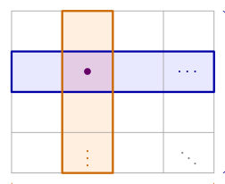
<figcaption class="paper-figure-caption"><b>Fig 1.</b> Figure 1: The local view of vertex v is a tensor code up to rescaling and permutations.</figcaption>
</figure>
</div>
<p><strong>Summary.</strong> This paper develops a method to construct high-quality Quantum Locally Testable Codes (qLTCs) by combining concepts from algebraic topology and coding theory. It overcomes previous limitations by employing non-Abelian cubical complexes within a high-dimensional expansion framework. The result provides a theoretical blueprint for building quantum codes with excellent, constant performance guarantees.</p>
<p><strong>Why it may be interesting.</strong> This work provides advanced theoretical tools for constructing robust quantum error-correcting codes, which are foundational for fault-tolerant quantum computation.</p>
<details>
<summary>Detailed structure</summary>
<p><strong>Main problem.</strong> The primary goal is to construct quantum locally testable codes (qLTCs) that possess desirable constant parameters (rate, distance, soundness, locality).</p>
<p><strong>Main result.</strong> The authors construct an explicit family of good qLTCs by leveraging a variant of the product expansion conjecture and utilizing non-Abelian cubical complexes.</p>
<p><strong>Method.</strong> The construction method involves equipping high-dimensional non-Abelian cubical complexes with carefully chosen Reed-Solomon local codes whose symmetries are compatible with the complex structure.</p>
<p><strong>Model / system.</strong> The model is Quantum Locally Testable Codes (qLTCs), which are defined using CSS codes derived from underlying graph/complex structures, generalizing from 2D to higher dimensions.</p>
<p><strong>Key observables.</strong> Constant rate, quantum distance, soundness, and locality of the constructed code.</p>
<p><strong>Important parameters / regimes.</strong> The construction requires the local codes to satisfy a $
ho$-product-expanding property, and the rate must be non-zero.</p>
<p><strong>Assumptions / limitations.</strong> The construction critically relies on assuming a variant of the product expansion conjecture of Bafna and Vyas.</p>
<p><strong>Paper structure.</strong> The paper builds by first reviewing classical LTCs on Cayley Complexes, then generalizing to the high-dimensional expansion framework, and finally improving the construction by incorporating non-Abelian cubical complexes and RS codes.</p>
</details>
<details>
<summary>Abstract</summary>
<p>We construct quantum locally testable codes (LTCs) with constant rate, distance, soundness and locality under a variant of a product expansion conjecture of Bafna and Vyas about Reed-Solomon codes. In particular, we use the high-dimensional expansion framework of Dinur, Lin and Vidick for constructing quantum LTCs, instantiated with the non-Abelian cubical complexes of Rungtanapirom, Stix and Vdovina. Our code is obtained by equipping the complex with carefully chosen Reed-Solomon local codes whose symmetries are compatible with those of the complex.</p>
</details>
<p><sub><a href="#top">↑ back to top</a></sub></p>

<p><a id="paper-2609.25328"></a></p>
<h3 id="nanoscale-srmath877mathiromath878math-freestanding-thin-films-for-flexible-electronics"><a href="http://arxiv.org/abs/2609.25328v1">Nanoscale Sr$_2$IrO$_4$ Freestanding Thin-Films for Flexible Electronics</a></h3>
<p><strong>Authors:</strong> Sujan Shrestha, Matthew Coile, Menglin Zhu, Maryam Souri, Jiwoong Kim, Rina Pandey, Joseph Brill, Jinwoo Hwang, Jong-Woo Kim, Ambrose Seo<br>
<strong>Type:</strong> experiment · <strong>Category:</strong> strongly correlated electrons · <strong>PDF:</strong> <a href="https://arxiv.org/pdf/2609.25328v1">https://arxiv.org/pdf/2609.25328v1</a><br>
<strong>Analysis basis:</strong> full PDF text, analyzed in chunks</p>
<div class="figure-strip-hint">↔ Scroll figures horizontally</div>
<div class="paper-figures-scroll">
<figure class="paper-figure-card">
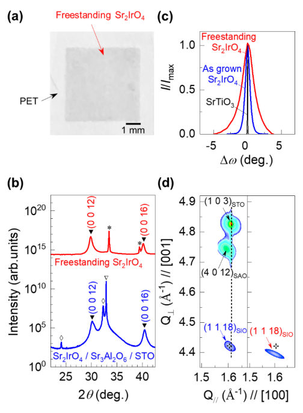
<figcaption class="paper-figure-caption"><b>Fig 1.</b> Fig. 2. (a) A photograph of a freestanding Sr2IrO4 nanomembrane transferred on a polyethylene</figcaption>
</figure>
<figure class="paper-figure-card">
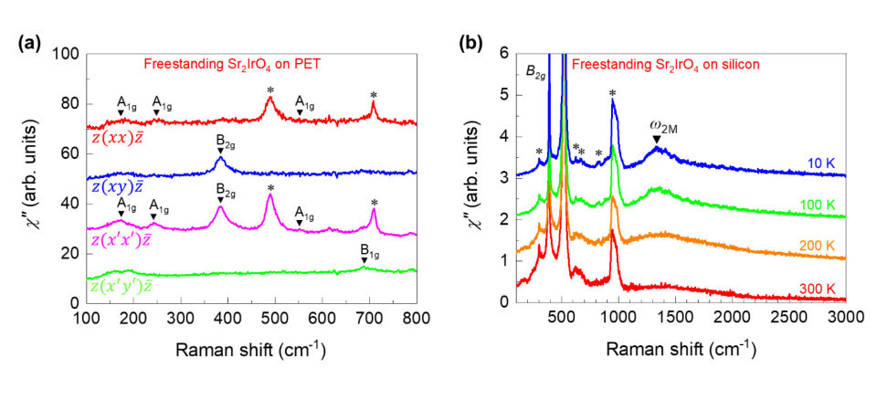
<figcaption class="paper-figure-caption"><b>Fig 2.</b> Fig. 3. (a) Polarization-dependent Raman spectra of a 24-nm-thick freestanding Sr2IrO4 membrane</figcaption>
</figure>
</div>
<p><strong>Summary.</strong> This paper reports on the successful fabrication of freestanding, high-quality $   ext{Sr}_2   ext{IrO}_4$ thin-films using a water-soluble buffer layer. By analyzing structural, optical, and magnetic properties, the authors show that these freestanding membranes retain the characteristic signatures of the bulk material. This technique opens a promising avenue for developing flexible electronic devices based on strongly correlated layered oxides.</p>
<p><strong>Why it may be interesting.</strong> The work demonstrates a novel, scalable method (freestanding films) to study strongly correlated materials like $    ext{Sr}_2   ext{IrO}_4$ in a mechanically flexible format, allowing for tuning of electronic properties beyond traditional epitaxial constraints.</p>
<details>
<summary>Detailed structure</summary>
<p><strong>Main problem.</strong> Developing techniques to create high-quality, freestanding, layered oxide thin-films for flexible electronics, overcoming substrate-related limitations.</p>
<p><strong>Main result.</strong> The freestanding $ ext{Sr}_2   ext{IrO}_4$ nanomembranes maintain structural and optical properties analogous to single crystals, suggesting a viable pathway for flexible layered-oxide electronics.</p>
<p><strong>Method.</strong> Fabrication involves growing $  ext{Sr}_2   ext{IrO}_4$ on a $  ext{Sr}_3   ext{Al}_2   ext{O}_6$ buffer layer, followed by leaching to create freestanding films, followed by structural and spectroscopic characterization.</p>
<p><strong>Model / system.</strong> The physical system is $    ext{Sr}_2   ext{IrO}_4$, a layered Mott insulator with $J_{	ext{eff}} = 1/2$, studied in freestanding thin-film form. The structure is stabilized by interfacial layers formed during the fabrication process.</p>
<p><strong>Key observables.</strong> Phonon modes, two-magnon Raman scattering peak ($\omega_{2M}$), optical absorption spectra, and lattice constants (in-plane and out-of-plane).</p>
<p><strong>Important parameters / regimes.</strong> Exchange interaction ($J$) derived from $\omega_{2M}$ ($\approx 60 	ext{ meV}$); tensile strain; and the presence of interfacial $    ext{SrIrO}_3$ layers.</p>
<p><strong>Assumptions / limitations.</strong> The structural integrity and electronic properties of the freestanding film are comparable to their epitaxial counterparts, despite the removal of the substrate.</p>
<p><strong>Figures summary.</strong> Figures show cross-sectional STEM images detailing interfacial layers, XRD/RSM data comparing as-grown vs. freestanding films, and Raman spectra illustrating phonon modes and temperature-dependent two-magnon scattering.</p>
<p><strong>Paper structure.</strong> The paper details the fabrication process using a soluble buffer layer, followed by comprehensive characterization using XRD, STEM, and various spectroscopies (Raman, optical absorption) to confirm structural coherence and measure key physical properties.</p>
</details>
<details>
<summary>Abstract</summary>
<p>We report the structural and optical properties of nanoscale Sr2IrO4 freestanding thin-films fabricated using a water-soluble Sr3Al2O6 layer. The coherent lattice structure, phonon modes, two-magnon Raman scattering, and optical absorption spectra of the Sr2IrO4 nanomembrane are analogous to those of the layered iridate epitaxial thin-films and single crystals. Remarkably, the formation of 3-unit-cell-thick SrIrO3 and interfacial composite layers alleviates antiphase boundaries at the Sr2IrO4/Sr3Al2O6 interface, resulting in structurally-robust nanomembranes. Our experimental results show that this freestanding thin-film approach of layered oxides can provide techniques for tuning or realizing unprecedented states beyond conventional thin-film methods, suggesting a pathway in achieving flexible layered-oxide electronics.</p>
</details>
<p><sub><a href="#top">↑ back to top</a></sub></p>

<p><a id="paper-2609.26788"></a></p>
<h3 id="quantum-advantage-for-distributed-symmetry-breaking"><a href="http://arxiv.org/abs/2609.26788v1">Quantum Advantage for Distributed Symmetry Breaking</a></h3>
<p><strong>Authors:</strong> Maxime Flin, Longcheng Li, Jukka Suomela<br>
<strong>Type:</strong> theory · <strong>Category:</strong> quantum information and computing · <strong>PDF:</strong> <a href="https://arxiv.org/pdf/2609.26788v1">https://arxiv.org/pdf/2609.26788v1</a><br>
<strong>Analysis basis:</strong> full PDF text, analyzed in chunks</p>
<div class="figure-strip-hint">↔ Scroll figures horizontally</div>
<div class="paper-figures-scroll">
<figure class="paper-figure-card">
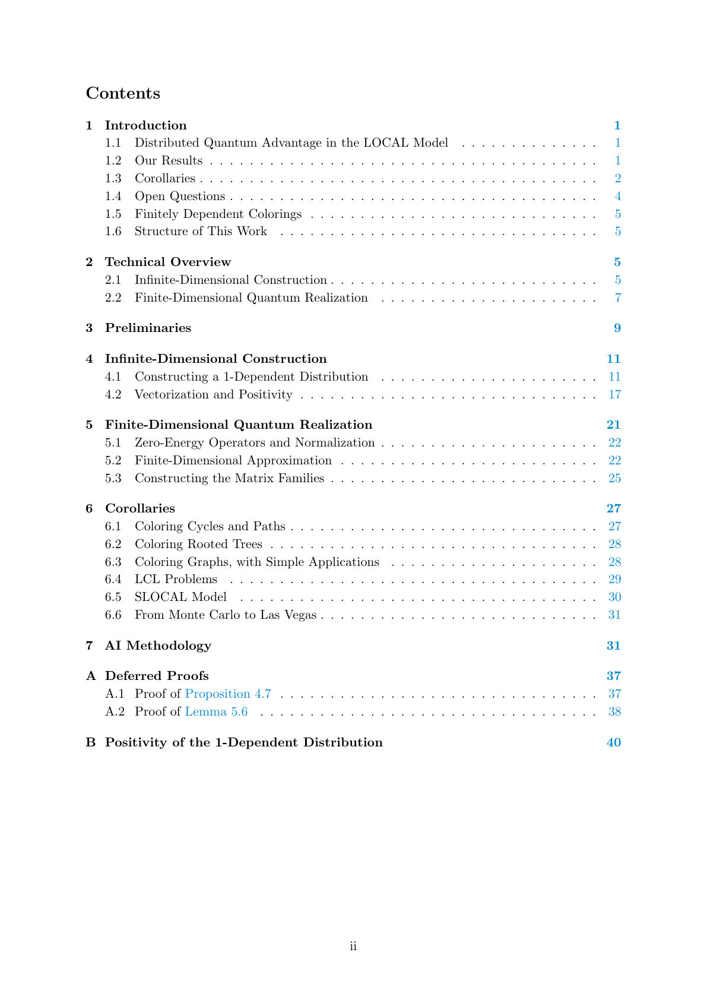
<figcaption class="paper-figure-caption"><b>Fig 1.</b> Low-resolution page preview, page 2</figcaption>
</figure>
<figure class="paper-figure-card">
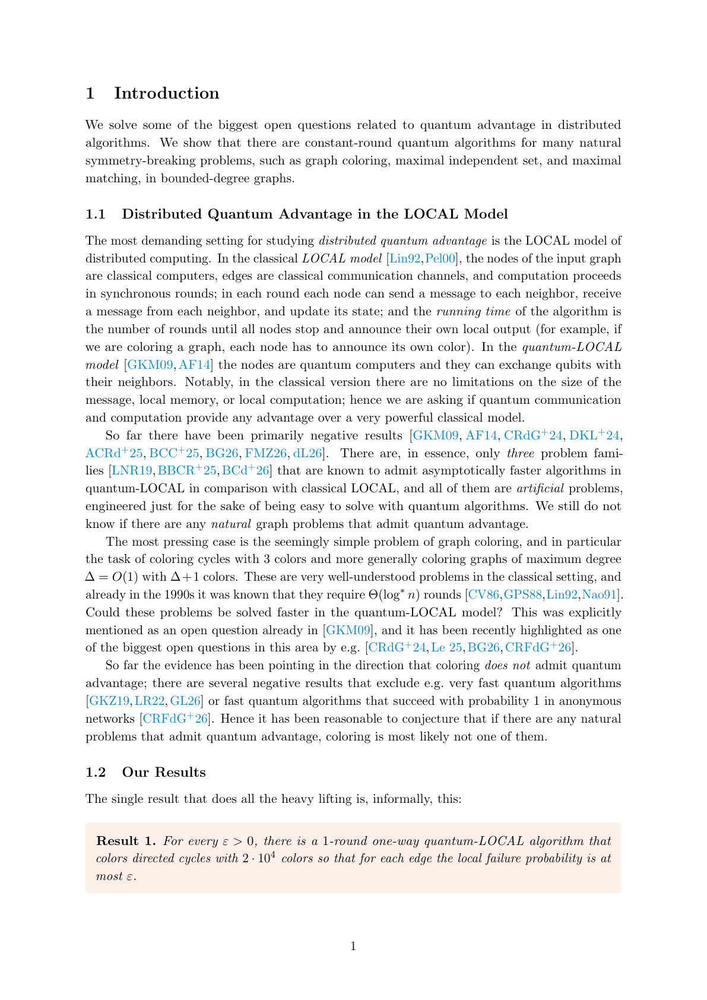
<figcaption class="paper-figure-caption"><b>Fig 2.</b> Low-resolution page preview, page 3</figcaption>
</figure>
<figure class="paper-figure-card">
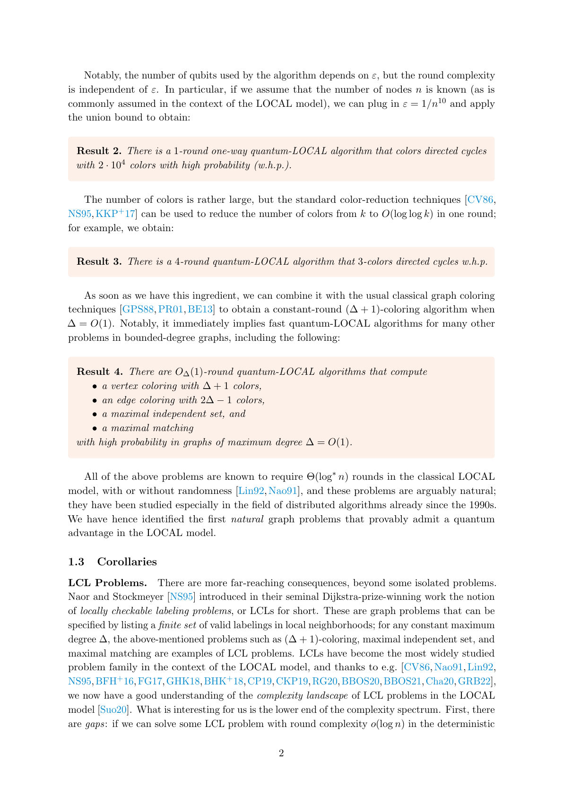
<figcaption class="paper-figure-caption"><b>Fig 3.</b> Low-resolution page preview, page 4</figcaption>
</figure>
<figure class="paper-figure-card">
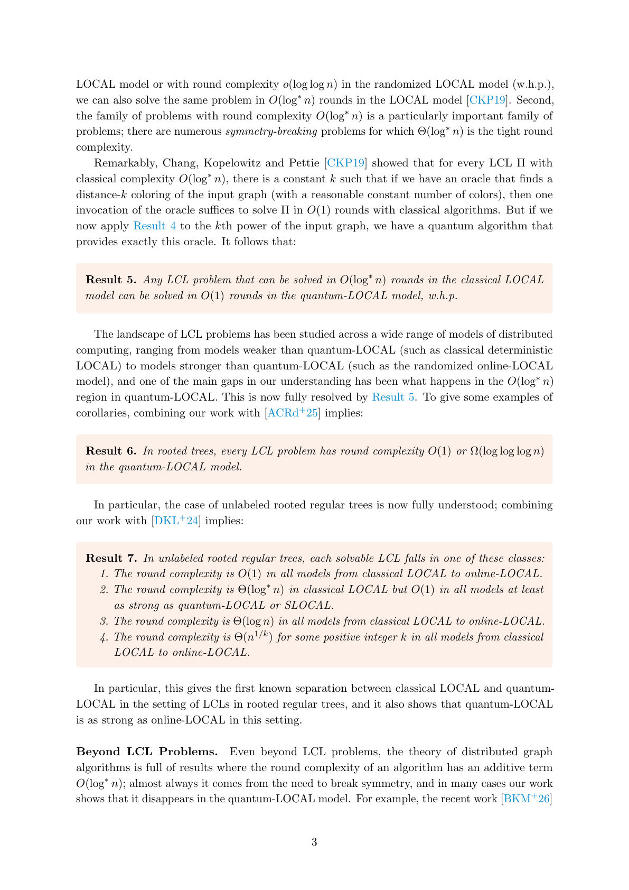
<figcaption class="paper-figure-caption"><b>Fig 4.</b> Low-resolution page preview, page 5</figcaption>
</figure>
<figure class="paper-figure-card">
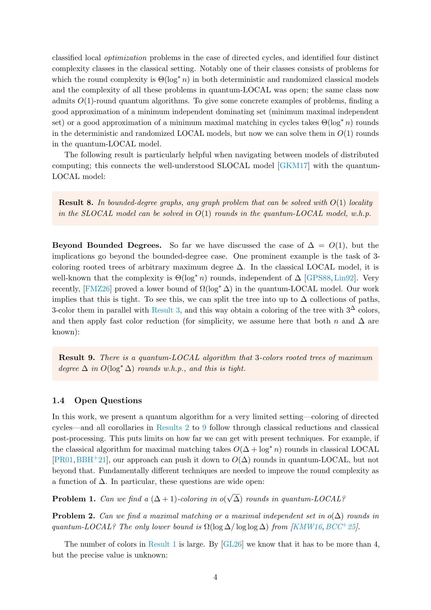
<figcaption class="paper-figure-caption"><b>Fig 5.</b> Low-resolution page preview, page 6</figcaption>
</figure>
</div>
<p><strong>Summary.</strong> This work presents a quantum algorithm achieving a significant speedup for solving graph problems like coloring and finding independent sets in the distributed quantum setting. By showing that certain problems solvable in polylogarithmic classical rounds can be solved in constant quantum rounds, it establishes the first natural examples of quantum advantage for the LOCAL model. The methodology involves advanced quantum information theory applied to graph structures.</p>
<p><strong>Why it may be interesting.</strong> The rigorous mathematical techniques used to establish quantum advantage in a highly structured computational model like the LOCAL model are relevant for understanding the limits of quantum computation in distributed physical systems.</p>
<details>
<summary>Detailed structure</summary>
<p><strong>Main problem.</strong> The paper aims to demonstrate and quantify the quantum advantage for solving natural graph problems in the distributed computing setting, specifically within the LOCAL model.</p>
<p><strong>Main result.</strong> It shows that any Locally Checkable Labeling Problem (LCL) solvable in $O(\log^* n)$ rounds classically can be solved in $O(1)$ rounds quantum-locally, providing natural examples of quantum advantage.</p>
<p><strong>Method.</strong> The authors develop quantum algorithms by constructing specific one-way quantum-LOCAL operators and analyzing their convergence properties using operator norms and energy bounds.</p>
<p><strong>Model / system.</strong> The theoretical framework is the comparison between the classical LOCAL model and the quantum-LOCAL model for distributed computation on input graphs. The core mechanism involves analyzing the time evolution of quantum operators related to graph colorings.</p>
<p><strong>Key observables.</strong> Round complexity (e.g., $O(1)$ vs. $\Theta(\log^* n)$), local failure probability ($\le \epsilon$), and the expectation values of time evolution operators $p_n(w)$.</p>
<p><strong>Important parameters / regimes.</strong> The number of colors ($q$), the convergence parameter ($s$), and the maximum degree ($\Delta$) of the graph.</p>
<p><strong>Assumptions / limitations.</strong> The analysis relies on bounding operator norms (Frobenius norm) and assuming the smallness of error terms ($\eta$) relative to the required precision.</p>
<p><strong>Paper structure.</strong> The paper progresses from establishing a core result (1-round quantum coloring of cycles) to generalizing this to all LCLs. The mathematical development involves constructing the necessary quantum operators via iterative methods and proving their convergence and positivity.</p>
</details>
<details>
<summary>Abstract</summary>
<p>We present a distributed quantum algorithm that $3$-colors cycles in $O(1)$ rounds, with high probability. It follows that all locally checkable labeling problems (LCLs) that have round complexity $O(\log^* n)$ in the classical LOCAL model can be solved in $O(1)$ rounds in the quantum-LOCAL model, with high probability; this includes problems such as maximal independent set and maximal matching in bounded-degree graphs. This presents the first natural examples of graph problems with an asymptotic distributed quantum advantage for the LOCAL model; all prior examples that separate LOCAL and quantum-LOCAL are artificial problems constructed merely for the sake of demonstrating quantum advantage.</p>
</details>
<p><sub><a href="#top">↑ back to top</a></sub></p>

<p><a id="paper-2609.26750"></a></p>
<h3 id="quantum-broadcast-channels-with-mutually-confidential-messages"><a href="http://arxiv.org/abs/2609.26750v1">Quantum Broadcast Channels with Mutually Confidential Messages</a></h3>
<p><strong>Authors:</strong> Paula Belzig, Sukanya Ghosal, Farzin Salek, Graeme Smith<br>
<strong>Type:</strong> theory · <strong>Category:</strong> quantum information and computing · <strong>PDF:</strong> <a href="https://arxiv.org/pdf/2609.26750v1">https://arxiv.org/pdf/2609.26750v1</a><br>
<strong>Analysis basis:</strong> full PDF text, analyzed in chunks</p>
<div class="figure-strip-hint">↔ Scroll figures horizontally</div>
<div class="paper-figures-scroll">
<figure class="paper-figure-card">
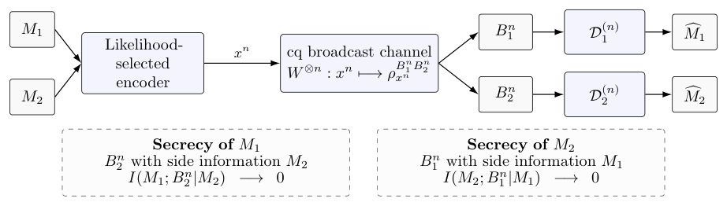
<figcaption class="paper-figure-caption"><b>Fig 1.</b> Figure 1: Confidential-message model for cq channels. The two secrecy conditions protect M1 from Bn 2 given M2, and M2 from Bn 1 given M1.</figcaption>
</figure>
<figure class="paper-figure-card">
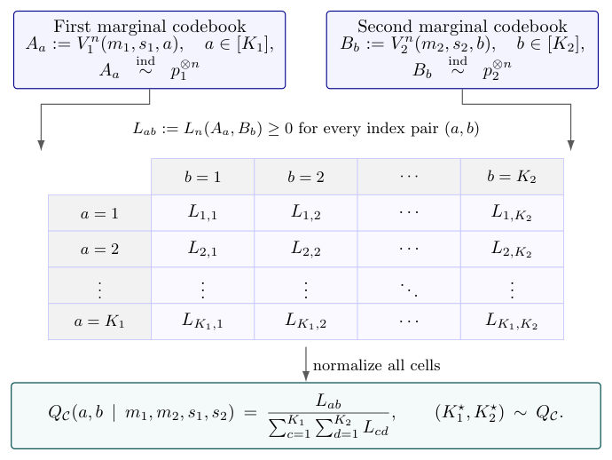
<figcaption class="paper-figure-caption"><b>Fig 2.</b> Figure 2: Likelihood selection for fixed (m1, m2, s1, s2). The two independently generated marginal codebooks form a table of weights Lab, and the encoder samples (K⋆ 1, K⋆ 2) proportionally to these weights.</figcaption>
</figure>
<figure class="paper-figure-card">
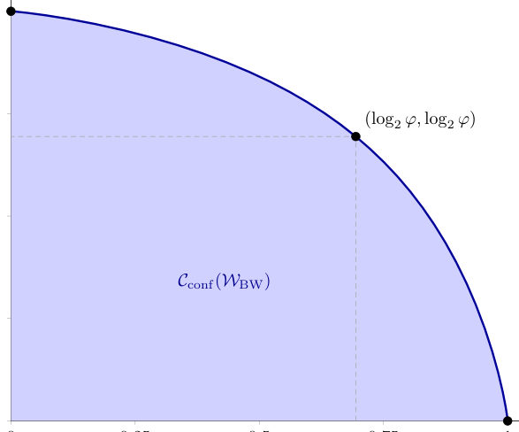
<figcaption class="paper-figure-caption"><b>Fig 3.</b> Figure 3: Confidential classical capacity region of the classical Blackwell channel. The endpoints (1, 0) and (0, 1) attain one perfectly confidential bit per use for the respective receiver. The marked symmetric point attains the maximum sum rate 2 log2 φ.</figcaption>
</figure>
<figure class="paper-figure-card">
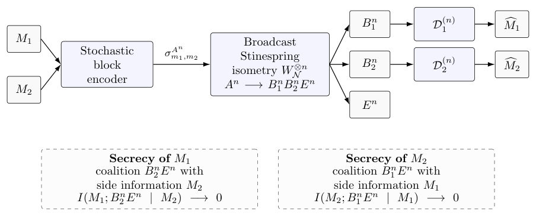
<figcaption class="paper-figure-caption"><b>Fig 4.</b> Figure 4: Quantum-input confidential-message model. The two secrecy conditions protect M1 from the coalition Bn 2 En given M2, and M2 from Bn 1 En given M1. The displayed strong-secrecy conditions are attained by our constructions; the operational capacity definition requires only vanishing conditional trace leakage.</figcaption>
</figure>
<figure class="paper-figure-card">
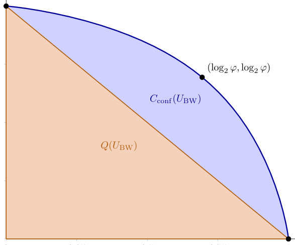
<figcaption class="paper-figure-caption"><b>Fig 5.</b> Figure 5: Quantifying rates numerically in bits per use for the confidential classical capacity and in qubits per use for the quantum capacity, we plot the two capacity regions for the Blackwell isometry.</figcaption>
</figure>
</div>
<p><strong>Summary.</strong> This work derives the inner bound for the confidential classical capacity of quantum broadcast channels, ensuring that two transmitted messages remain secret from each other. Using advanced information theory, the authors prove that for certain channels, the achievable confidential rates are strictly lower than what standard quantum capacity measures predict. This highlights the crucial role of mutual secrecy constraints in quantum communication theory.</p>
<p><strong>Why it may be interesting.</strong> The rigorous characterization of confidential capacity regions and the explicit separation from standard quantum capacity bounds provide deep insights into the fundamental security limits of quantum communication protocols.</p>
<details>
<summary>Detailed structure</summary>
<p><strong>Main problem.</strong> The paper studies the fundamental limits of transmitting two independent, mutually confidential classical messages over a quantum broadcast channel.</p>
<p><strong>Main result.</strong> It establishes an inner bound on the confidential classical capacity region, and demonstrates that for certain channels, this achievable rate region lies outside the unassisted quantum-capacity region.</p>
<p><strong>Method.</strong> The authors employ advanced information-theoretic techniques, including establishing Marton-type inner bounds, using likelihood-selected coding schemes, and applying complex multi-letter capacity theorems.</p>
<p><strong>Model / system.</strong> The system modeled is a Quantum Broadcast Channel (CQ channel) designed to transmit two messages ($M_1, M_2$) such that each message remains secret from the other receiver, even when the other receiver knows its own message.</p>
<p><strong>Key observables.</strong> Achievable rate pairs $(R_1, R_2)$, average error probability ($P_e^{(i)}$), and conditional strong-secrecy parameters ($\Delta_{1,n}, \Delta_{2,n}$).</p>
<p><strong>Important parameters / regimes.</strong> The analysis depends on the block length $n 	o \infty$ limit, and the specific structure of the quantum channel (e.g., Blackwell or Platypus channels).</p>
<p><strong>Assumptions / limitations.</strong> The analysis relies on the existence of finite auxiliary variables and the use of normalized likelihood weights for encoding.</p>
<p><strong>Figures summary.</strong> Figure 1 illustrates the confidential-message model for cq channels, showing the two secrecy conditions. Figure 2 illustrates the likelihood selection process for fixed indices.</p>
<p><strong>Paper structure.</strong> The paper develops the inner bound by first establishing the classical Marton-type bound, then providing a concrete classical-quantum realization using likelihood-selected coding, and finally comparing this confidential classical capacity to the unassisted quantum capacity.</p>
</details>
<details>
<summary>Abstract</summary>
<p>We study the transmission of two independent confidential classical messages over a quantum broadcast channel, one for each receiver. Each message must remain secret from the other receiver, including when that receiver knows its own message. For classical inputs and quantum outputs, we establish the classical Marton-type inner bound under average reliability and conditional strong secrecy. The encoder selects pairs of codewords from independently generated codebooks using normalized likelihood weights. We prove reliability through a change-of-distribution argument. Our main technical result is a bipartite classical-quantum resolvability theorem that accounts for the dependence created by pair selection and establishes secrecy for the same encoder. We also obtain a multi-letter capacity characterization and extend it to arbitrary quantum inputs under secrecy against the other receiver, together with the Stinespring environment. We recover confidential capacity regions for deterministic classical and degraded classical-quantum channels, with an explicit evaluation for the classical Blackwell channel. For coherent isometric extensions of injective deterministic classical broadcast channels, we show that the confidential classical capacity region equals that of the corresponding classical channel. We then compare confidential classical communication with quantum transmission. For the coherent isometric extension of the Blackwell channel, we determine the unassisted quantum-capacity region and show that some achievable confidential classical rate pairs lie outside it. The Platypus channel provides another example of this separation.</p>
</details>
<p><sub><a href="#top">↑ back to top</a></sub></p>

<p><a id="paper-2609.25660"></a></p>
<h3 id="schrodingerization-for-quantum-linear-systems-problems"><a href="http://arxiv.org/abs/2609.25660v1">Schrödingerization for quantum linear systems problems</a></h3>
<p><strong>Authors:</strong> Long Zhang, Yin Yang, Yue Yu<br>
<strong>Type:</strong> both · <strong>Category:</strong> quantum information and computing · <strong>PDF:</strong> <a href="https://arxiv.org/pdf/2609.25660v1">https://arxiv.org/pdf/2609.25660v1</a><br>
<strong>Analysis basis:</strong> full PDF text, analyzed in chunks</p>
<div class="figure-strip-hint">↔ Scroll figures horizontally</div>
<div class="paper-figures-scroll">
<figure class="paper-figure-card">
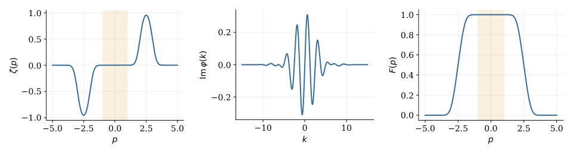
<figcaption class="paper-figure-caption"><b>Fig 1.</b> Fig. 1: The Fourier kernel pair in (2.10) at the fixed illustrative value σ = 1/4 (r = 8). (a)</figcaption>
</figure>
<figure class="paper-figure-card">
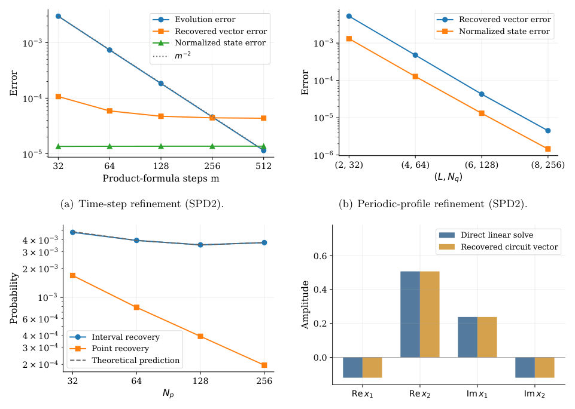
<figcaption class="paper-figure-caption"><b>Fig 2.</b> Fig. 2: Validation of the dissipative Schr¨odingerization construction. (a) Time-step refinement for</figcaption>
</figure>
</div>
<p><strong>Summary.</strong> This paper introduces an advanced Schrödingerization algorithm to solve quantum linear systems by transforming the problem into an inhomogeneous convection equation. By employing Duhamel's principle and Fourier projection, the authors achieve an optimal query complexity of $O(\kappa_A \log(1/\epsilon))$. This represents a significant algorithmic improvement for quantum computation tasks involving linear system inversion.</p>
<p><strong>Why it may be interesting.</strong> The use of Schrödingerization to solve linear systems is a powerful technique for quantum simulation, offering a potentially superior scaling compared to older methods by avoiding separate LCU steps.</p>
<details>
<summary>Detailed structure</summary>
<p><strong>Main problem.</strong> The paper develops a novel, efficient quantum algorithm to solve quantum linear systems of equations (QLSPs), aiming to prepare a state proportional to the solution $x = A^{-1}b$.</p>
<p><strong>Main result.</strong> The proposed Schrödingerization algorithm achieves a query complexity of $O(\kappa_A \log(1/\epsilon))$ queries, matching the standard worst-case scaling for solving QLSPs.</p>
<p><strong>Method.</strong> It reformulates the problem using Duhamel's principle to create an inhomogeneous convection equation, which is then solved via a two-dimensional Schrödingerization process involving Fourier projection and an auxiliary variable.</p>
<p><strong>Model / system.</strong> The core model is the quantum linear system $Ax=b$, where $A$ is an invertible matrix. The method is tested on various systems, including positive-definite and indefinite matrices.</p>
<p><strong>Key observables.</strong> Solution error ($\ell_2$ state error $\le \epsilon$), recovery probability ($P_p$), and the condition number ($\kappa_A$).</p>
<p><strong>Important parameters / regimes.</strong> Condition number $\kappa_A$, target accuracy $\epsilon$, and the evolution time $T$.</p>
<p><strong>Assumptions / limitations.</strong> Assumes exact oracle access and requires a valid constant-factor estimate of the solution norm $\xi$ for the block preconditioning step.</p>
<p><strong>Figures summary.</strong> Figures illustrate error decay curves showing the benefit of increasing time steps ($m$) and comparing the superior recovery probability achieved using interval recovery versus point recovery.</p>
<p><strong>Paper structure.</strong> The paper develops the convection representation using Duhamel's principle, establishes rigorous discretization and recovery error bounds using spectral theory, details the final algorithm and its complexity analysis, and concludes with numerical simulations on various systems.</p>
</details>
<details>
<summary>Abstract</summary>
<p>We develop a Schrödingerization algorithm for quantum linear systems problems in two higher dimensions. The earlier LC-Schrödingerization approach represents the solution as a time integral of a homogeneous convection response and implements this integral by a linear combination of unitaries (LCU) over evolution times. We instead use Duhamel's principle to incorporate the integral into an inhomogeneous convection equation with zero initial data. Fourier projection in the convection variable and Schrödingerization in a second auxiliary variable then realize the solution without the separate LCU step. A joint choice of the kernel and recovery procedure gives an evolution time independent of the target accuracy, a uniformly bounded $L^2$ kernel normalization, and accurate recovery on a fixed interval. We establish the periodization and discretization bounds and analyze the interval recovery probability. With block preconditioning, we retain a single logarithmic precision factor and obtain linear condition-number dependence without variable-time amplitude amplification. Under exact oracle access and given a valid constant-factor solution-norm estimate, the algorithm uses $\mathcal O(κ_A\log(1/\varepsilon))$ queries to each original input oracle, with constant success probability and $\ell^2$ state error at most $\varepsilon$. The matrix-query bound matches the standard worst-case scaling when the supplied norm bounds are tight. UnitaryLab simulations on positive-definite and indefinite systems demonstrate the solution accuracy and probability gain from interval recovery.</p>
</details>
<p><sub><a href="#top">↑ back to top</a></sub></p>

<p><a id="paper-2609.25462"></a></p>
<h3 id="sharper-bounds-for-the-complex-grothendieck-constant"><a href="http://arxiv.org/abs/2609.25462v1">Sharper Bounds for the Complex Grothendieck Constant</a></h3>
<p><strong>Authors:</strong> Steven Heilman, Chris Jones, Giulio Malavolta<br>
<strong>Type:</strong> theory · <strong>Category:</strong> other · <strong>PDF:</strong> <a href="https://arxiv.org/pdf/2609.25462v1">https://arxiv.org/pdf/2609.25462v1</a><br>
<strong>Analysis basis:</strong> full PDF text, analyzed in chunks</p>
<div class="figure-strip-hint">↔ Scroll figures horizontally</div>
<div class="paper-figures-scroll">
<figure class="paper-figure-card">
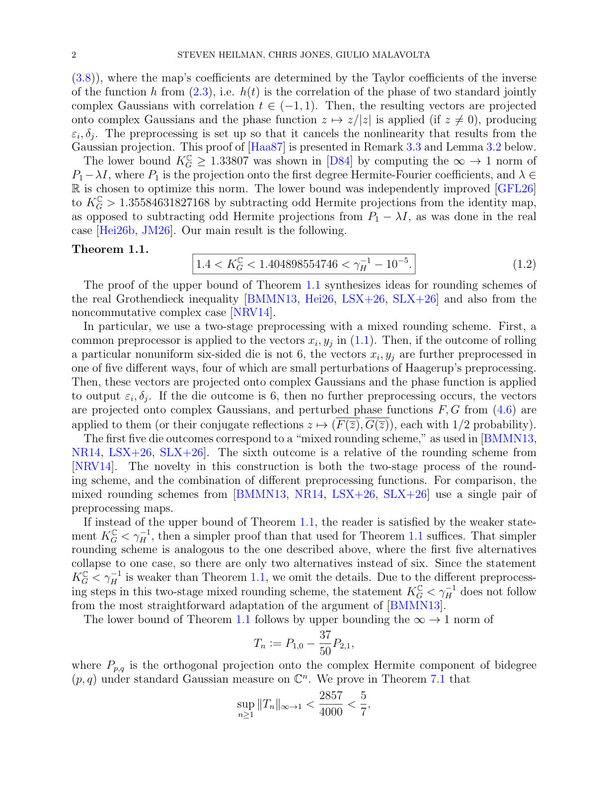
<figcaption class="paper-figure-caption"><b>Fig 1.</b> Low-resolution page preview, page 2</figcaption>
</figure>
<figure class="paper-figure-card">
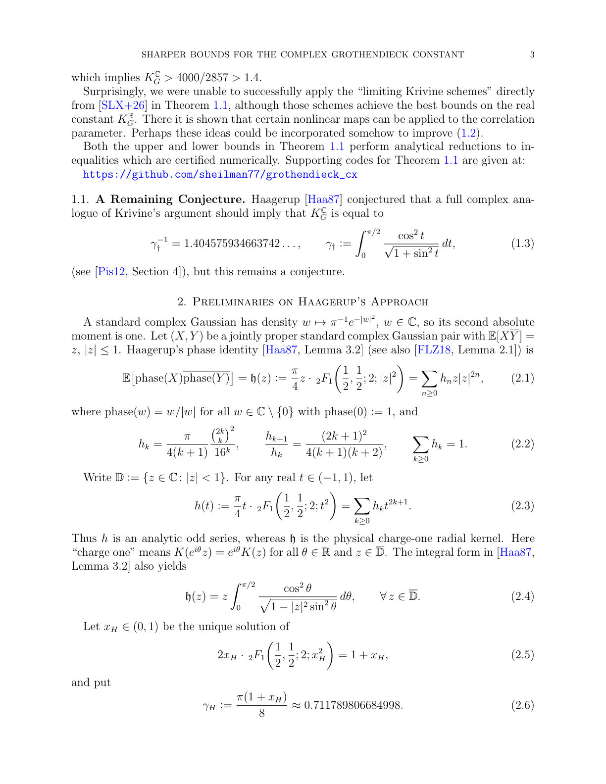
<figcaption class="paper-figure-caption"><b>Fig 2.</b> Low-resolution page preview, page 3</figcaption>
</figure>
<figure class="paper-figure-card">
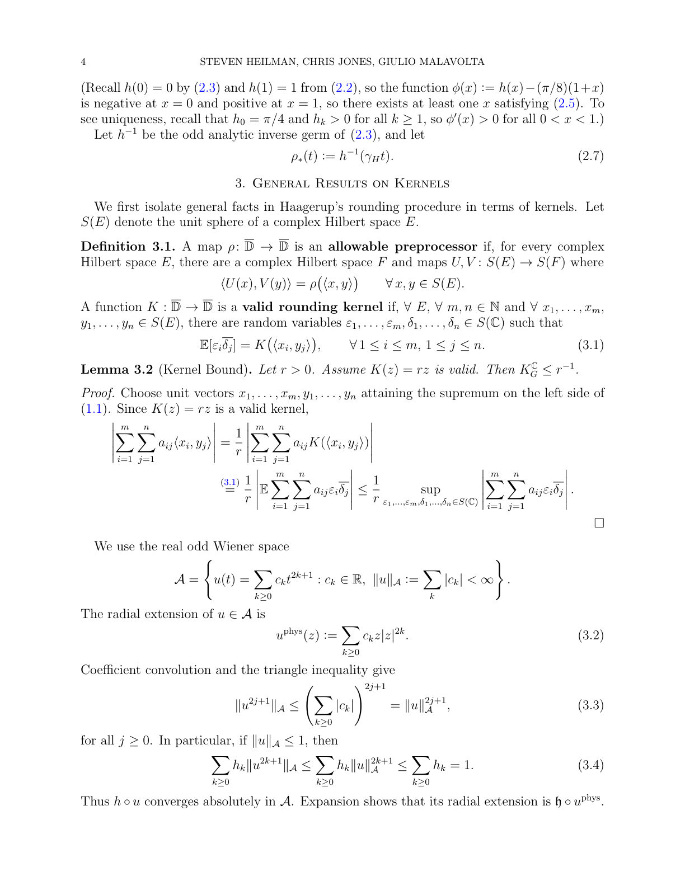
<figcaption class="paper-figure-caption"><b>Fig 3.</b> Low-resolution page preview, page 4</figcaption>
</figure>
<figure class="paper-figure-card">
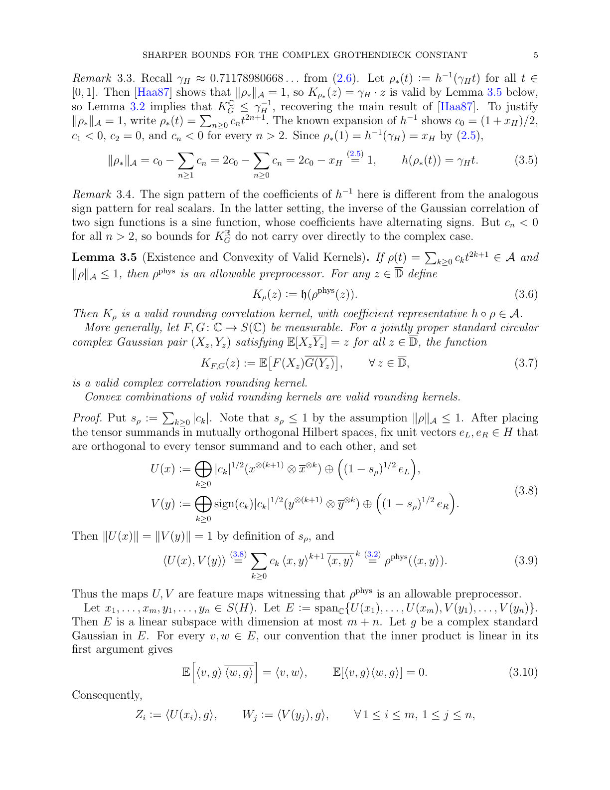
<figcaption class="paper-figure-caption"><b>Fig 4.</b> Low-resolution page preview, page 5</figcaption>
</figure>
<figure class="paper-figure-card">
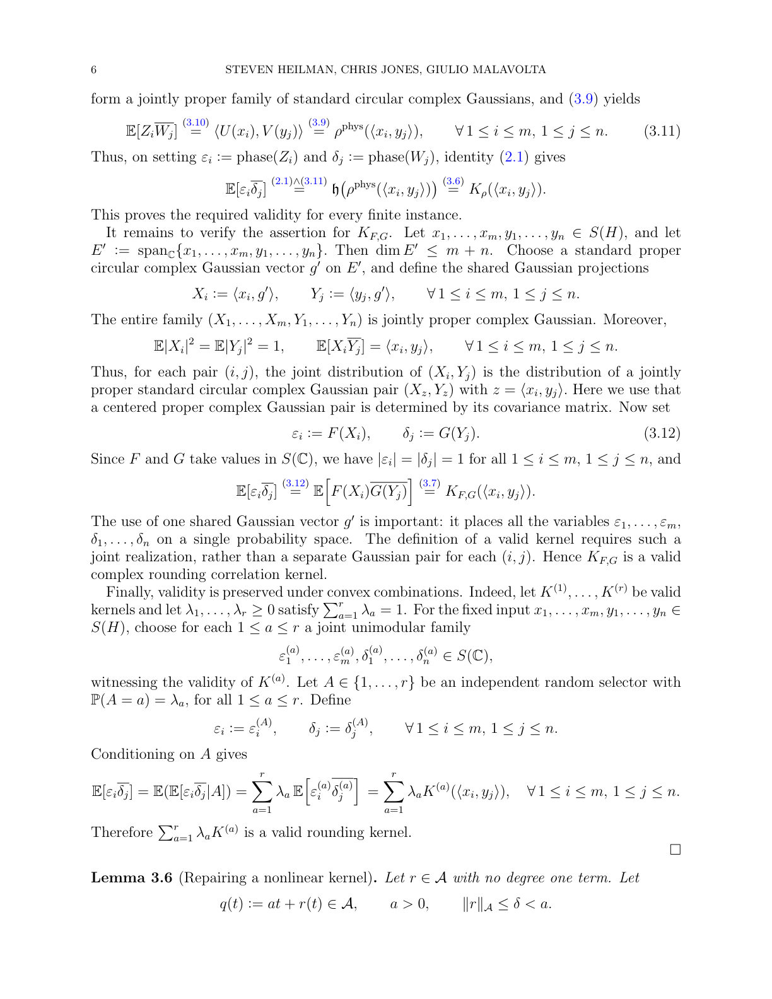
<figcaption class="paper-figure-caption"><b>Fig 5.</b> Low-resolution page preview, page 6</figcaption>
</figure>
</div>
<p><strong>Summary.</strong> This paper provides a rigorous mathematical improvement on the bounds for the complex Grothendieck constant using advanced techniques from functional analysis and complex Gaussian theory. It establishes a new, tighter upper bound by combining ideas from real and noncommutative complex cases. The work is significant for pure mathematics, though its underlying tools touch upon areas relevant to quantum correlation bounds.</p>
<p><strong>Why it may be interesting.</strong> While highly abstract, the techniques used—involving Gaussian processes, kernel methods, and bounding complex correlation structures—have deep mathematical parallels to quantum information theory and quantum channel analysis.</p>
<details>
<summary>Detailed structure</summary>
<p><strong>Main problem.</strong> The paper aims to determine sharper mathematical bounds for the complex Grothendieck constant, $K_G^{\mathbb{C}}$, a constant arising from complex matrix inequalities.</p>
<p><strong>Main result.</strong> The authors establish a new, tighter upper bound for the constant: $1.4 < K_G^{\mathbb{C}} < 1.404898554746$, improving previous bounds from Haagerup and Davie.</p>
<p><strong>Method.</strong> The methods involve advanced functional analysis techniques, including constructing and analyzing 'valid rounding kernels' using jointly proper standard complex Gaussians and optimizing complex quadratic forms.</p>
<p><strong>Model / system.</strong> The context is abstract functional analysis, specifically dealing with matrix norms and inequalities related to complex correlation structures, rather than a physical Hamiltonian or lattice model.</p>
<p><strong>Key observables.</strong> The complex Grothendieck constant ($K_G^{\mathbb{C}}$), and related quantities like $\kappa_r$ (cumulant expressions).</p>
<p><strong>Important parameters / regimes.</strong> The bounds themselves (e.g., $1.404898554746$), and parameters derived from Gaussian moments and polynomial approximations.</p>
<p><strong>Assumptions / limitations.</strong> The analysis relies on establishing the validity of correlation kernels via Gaussian projections and solving complex optimization problems over parameter spaces.</p>
<p><strong>Figures summary.</strong> Not specified in the notes, but the text references theorems and equations detailing the derivation of the bounds.</p>
<p><strong>Paper structure.</strong> The paper progresses from defining the constant and its associated inequalities, to developing the machinery of valid rounding kernels using Gaussian projections, and finally culminating in the rigorous derivation and comparison of the improved upper and lower bounds.</p>
</details>
<details>
<summary>Abstract</summary>
<p>We show that $1.4<K_G^{\mathbb{C}}<1.404898554746$, where $K_G^{\mathbb{C}}$ is the complex Grothendieck constant. The upper bound improves on Haagerup's bound of $1.40490913\ldots$ from 1987, and the lower bound improves on Davie's bound of $1.33807$ from 1984. The upper bound combines ideas from the real and noncommutative complex cases of Grothendieck's inequality.</p>
</details>
<p><sub><a href="#top">↑ back to top</a></sub></p>

<p><a id="paper-2609.26677"></a></p>
<h3 id="strong-matchgate-designs-in-nearly-optimal-depth"><a href="http://arxiv.org/abs/2609.26677v1">Strong matchgate designs in nearly optimal depth</a></h3>
<p><strong>Authors:</strong> Maxwell West, M. Cerezo, Martin Larocca<br>
<strong>Type:</strong> theory · <strong>Category:</strong> quantum information and computing · <strong>PDF:</strong> <a href="https://arxiv.org/pdf/2609.26677v1">https://arxiv.org/pdf/2609.26677v1</a><br>
<strong>Analysis basis:</strong> full PDF text, analyzed in chunks</p>
<div class="figure-strip-hint">↔ Scroll figures horizontally</div>
<div class="paper-figures-scroll">
<figure class="paper-figure-card">
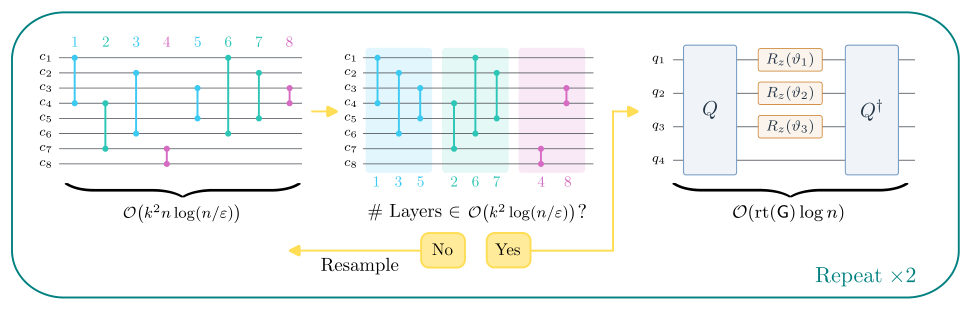
<figcaption class="paper-figure-caption"><b>Fig 1.</b> Figure 1. Our construction proceeds in three steps: (1) Randomly sample m ∈O(k2n log(n/ε)) pairs 1 ⩽ai &lt; bi ⩽2n, and m angles ϑi; apply the corresponding Majorana rotations {Rai,bi(ϑi)}m i=1. (2) Check if those rotations can be parallelised into O(k2 log(n/ε)) layers of commuting gates; if not, go back to step one. (3) Compile each parallel layer of Majorana rotations into two qubit gates of depth O(rt(G) log n) via a fermionic router. Concatenate two such independently accepted circuits; the total depth is then given by (# Layers) × O(rt(G) log n) = O(k2rt(G) log(n/ε) log n).</figcaption>
</figure>
</div>
<p><strong>Summary.</strong> This paper develops methods to construct high-quality quantum states (k-designs) over the matchgate group, which is relevant for quantum simulation and tomography. It achieves this by analyzing the depth required based on the underlying quantum hardware's connectivity graph. The key finding is that the required depth scales polynomially with $k$ and the graph's routing number, offering significant speedups over previous theoretical limits.</p>
<p><strong>Why it may be interesting.</strong> The results provide concrete, resource-aware estimates for implementing complex quantum tasks (like tomography) on near-term hardware architectures by optimizing the required circuit depth based on physical connectivity.</p>
<details>
<summary>Detailed structure</summary>
<p><strong>Main problem.</strong> The paper addresses the resource cost (circuit depth) required to generate approximately random unitaries, specifically $k$-designs, over the matchgate group on quantum hardware.</p>
<p><strong>Main result.</strong> They provide a construction achieving strong $\epsilon$-approximate relative error matchgate $k$-designs in depth $O(k^2 r_t(G) \log n \log(n/\epsilon))$ for general connectivity, and show optimal depth for $k=3$ in the all-to-all case.</p>
<p><strong>Method.</strong> The construction uses a random walk on the matchgate group, followed by compiling the resulting operations into quantum circuits using techniques related to fermionic routing and Clifford group gates.</p>
<p><strong>Model / system.</strong> The system involves $n$ qubits and the matchgate group $MG(n)$, which is generated by 2-Majorana rotations. The complexity is analyzed based on the connectivity graph $G$ and its routing number $r_t(G)$.</p>
<p><strong>Key observables.</strong> Design quality ($\epsilon$-approximate relative error $k$-design), circuit depth ($D$), and the routing number $r_t(G)$.</p>
<p><strong>Important parameters / regimes.</strong> Number of qubits ($n$), design order ($k$), approximation error ($\epsilon$), and graph connectivity ($r_t(G)$).</p>
<p><strong>Assumptions / limitations.</strong> The analysis relies on spectral bounds derived from the random walk operator and the ability to compile permutations using Clifford gates, with the general case overcoming limitations of nearest-neighbor connectivity.</p>
<p><strong>Figures summary.</strong> Figure 1 illustrates the three-step construction process: sampling rotations, checking for parallelization into layers, and compiling layers into two-qubit gates. Figure (A) shows the structure of a binary tree for $n=3$ qubits.</p>
<p><strong>Paper structure.</strong> The paper first establishes the general depth bound for $k$-designs using random walks. It then details the compilation of permutations of Majoranas into depth $O(r_t(G) \log n)$ using Clifford gates. Finally, it provides lower bounds on the required depth for $k$-designs.</p>
</details>
<details>
<summary>Abstract</summary>
<p>Understanding the resources required to generate approximately random unitaries over various groups is a natural goal of quantum information theory. With respect to one notion of approximation, that of a design, it is known that the full unitary group can be approximated in logarithmic depth by one-dimensional circuits of nearest-neighbour 2-local gates. On the other hand, remarkably, circuits with this connectivity cannot form designs over the matchgate group in sublinear depth. Here we show that this dramatic slowdown can disappear when using a general qubit connectivity graph $\mathsf{G}$ of routing number ${\rm rt}(\mathsf{G})$. Indeed, in this setting one can obtain (strong) $\varepsilon$-approximate relative error matchgate $k$-designs in depth $\mathcal{O}(k^2{\rm rt}(\mathsf{G})\log n\log(n/\varepsilon))$. For all-to-all connectivity, ${\rm rt}(\mathsf{G})=2$. Our construction is conceptually simple, involving a random walk on the matchgate group, and no ancillae. As a technical byproduct, we improve upon the state of the art for fermionic routing, obtaining an $\mathcal{O}({\rm rt}(\mathsf{G})\log n)$ depth router. Additionally, for $k=3$, we obtain an exact strong matchgate design in $\mathcal{O}({\rm rt}(\mathsf{G})\log n)$ depth, again without ancillae. Under all-to-all connectivity, our fermionic router and 3-designs are optimal. Notably, our results imply that quantum algorithms for fermionic tomography which require drawing from a matchgate 3-design may be exponentially sped up on quantum computers with all-to-all connectivity, relative to their strictly one-dimensional counterparts.</p>
</details>
<p><sub><a href="#top">↑ back to top</a></sub></p>

<p><a id="paper-2609.26678"></a></p>
<h3 id="strong-selective-and-list-decoding-direct-product-theorems-for-quantum-query-complexity"><a href="http://arxiv.org/abs/2609.26678v1">Strong Selective and List-Decoding Direct Product Theorems for Quantum Query Complexity</a></h3>
<p><strong>Authors:</strong> Paul Beame, Niels Kornerup, Michael Whitmeyer<br>
<strong>Type:</strong> theory · <strong>Category:</strong> quantum information and computing · <strong>PDF:</strong> <a href="https://arxiv.org/pdf/2609.26678v1">https://arxiv.org/pdf/2609.26678v1</a><br>
<strong>Analysis basis:</strong> full PDF text, analyzed in chunks</p>
<div class="figure-strip-hint">↔ Scroll figures horizontally</div>
<div class="paper-figures-scroll">
<figure class="paper-figure-card">
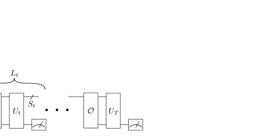
<figcaption class="paper-figure-caption"><b>Fig 1.</b> Figure 1: A general quantum query algorithm with T queries.</figcaption>
</figure>
<figure class="paper-figure-card">
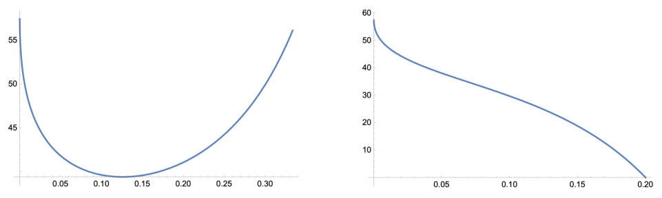
<figcaption class="paper-figure-caption"><b>Fig 2.</b> Figure 2: The multiplicative factor loss ζ(ε) in our conversion from negative-weights to multiplica- tive adversary lower bounds as a function of ε, which corresponds to the harder-to-meet Boolean target of the negative-weights adversary method, is given on the left. The right is what we would get if we did the same analysis with the weaker non-Boolean stopping condition; both have the same maximum value at ε = 0.</figcaption>
</figure>
<figure class="paper-figure-card">
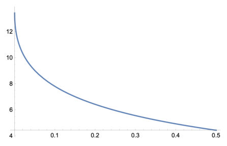
<figcaption class="paper-figure-caption"><b>Fig 3.</b> Figure 3: The multiplicative factor loss ζ2(ε) as a function of ε in our modified conversion from negative-weights to multiplicative adversary lower bounds with η = 1/2.</figcaption>
</figure>
</div>
<p><strong>Summary.</strong> This paper advances the theory of quantum query complexity by proving strong direct-product theorems for selective and list-decoding settings. It achieves this by introducing a generalized multiplicative adversary method capable of handling relations. These results provide tighter lower bounds on the resources needed for quantum computation compared to previous methods.</p>
<p><strong>Why it may be interesting.</strong> While highly abstract, the development of generalized adversary methods for quantum query complexity provides powerful new tools for establishing lower bounds on quantum algorithms, which is fundamental to quantum information theory.</p>
<details>
<summary>Detailed structure</summary>
<p><strong>Main problem.</strong> The paper generalizes strong direct-product theorems to cover quantum query complexity for selective and list-decoding scenarios, extending classical results.</p>
<p><strong>Main result.</strong> It proves quantum strong selective and list-decoding direct-product theorems for all partial Boolean functions, establishing new lower bounds for quantum query complexity.</p>
<p><strong>Method.</strong> The authors employ advanced adversary methods, specifically developing a new multiplicative adversary formulation for relations that captures lower bounds previously established by negative-weights adversaries.</p>
<p><strong>Model / system.</strong> The focus is on quantum query complexity, analyzing the computational power required to compute functions or relations $R$ using quantum algorithms.</p>
<p><strong>Key observables.</strong> Quantum query complexity, success probability, and the structure of the adversary method bounds.</p>
<p><strong>Important parameters / regimes.</strong> The number of inputs ($m$), the number of required answers ($k$), and the structure of the relation $R$.</p>
<p><strong>Assumptions / limitations.</strong> The proofs rely on extending multiplicative adversary methods to handle relational structures and generalizing techniques from classical randomized complexity.</p>
<p><strong>Figures summary.</strong> The notes do not provide a summary of figures, but they detail the mathematical structure of proofs involving projectors and norms.</p>
<p><strong>Paper structure.</strong> The paper develops results in stages: first, establishing selective direct-product theorems using a new adversary method; second, proving the quantum analogue of list-decoding direct-product theorems; and third, providing detailed technical lemmas (e.g., Lemma D.4) to support the general bounds.</p>
</details>
<details>
<summary>Abstract</summary>
<p>Quantum strong direct-product theorems for specific functions have been known for nearly two decades. These have been extended to general results for function computation and state generation. The proofs of these results use a version of the multiplicative adversary method that does not naturally extend to relations. Standard strong direct-product theorems apply when algorithms must correctly answer every given question. Prior work extended them to equivalent threshold direct-product theorems, which require answers to all questions but only require that most answers are correct.   We focus on two further generalizations. Strong selective direct-products apply to algorithms that adaptively choose, based on what they learn from queries, which questions from a large list to answer. This generalization is relational and useful for proving time-space tradeoffs. We prove a quantum strong selective direct-product theorem for all functions using a new multiplicative adversary formulation for relations that satisfies a strong selective direct product property while being strong enough to capture any query lower bound for functions proven by negative-weights adversaries. This was not previously known even without selectivity.   The second generalization is list-decoding direct product problems introduced by Ben-David and Blais for classical randomized query complexity. These allow an algorithm to produce a large list of possible output vectors such that one of them is fully correct. They proved that such theorems hold for classical randomized complexity of all Boolean functions. We prove a quantum analogue of this theorem for all partial Boolean functions. We show that strong list-decoding direct-product theorems are implied by a special case of multiplicative adversaries which we show, via a new reduction, can be obtained from negative-weights adversaries for any Boolean-valued function.</p>
</details>
<p><sub><a href="#top">↑ back to top</a></sub></p>

<p><a id="paper-2609.25726"></a></p>
<h3 id="the-failure-of-simultaneous-quantum-typicality"><a href="http://arxiv.org/abs/2609.25726v1">The Failure of Simultaneous Quantum Typicality</a></h3>
<p><strong>Authors:</strong> Benoit Collins<br>
<strong>Type:</strong> theory · <strong>Category:</strong> quantum information and computing · <strong>PDF:</strong> <a href="https://arxiv.org/pdf/2609.25726v1">https://arxiv.org/pdf/2609.25726v1</a><br>
<strong>Analysis basis:</strong> full PDF text, analyzed in chunks</p>
<div class="figure-strip-hint">↔ Scroll figures horizontally</div>
<div class="paper-figures-scroll">
<figure class="paper-figure-card">
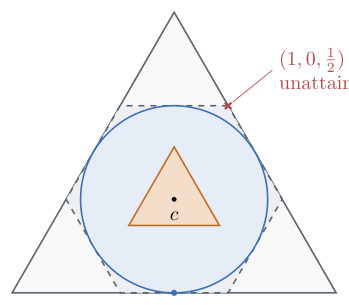
<figcaption class="paper-figure-caption"><b>Fig 1.</b> Figure 1: The probability plane, up to a uniform change of scale. The disk is the exact image of the Bloch sphere of M. Its center has the two preimages [v] and [¯v], and the open orange triangle lifts to the two holes on that sphere. The triangle is drawn with t = 0.14 for visibility; the estimates use t ≤10−3.</figcaption>
</figure>
<figure class="paper-figure-card">

<figcaption class="paper-figure-caption"><b>Fig 2.</b> Figure 2: One local chart, with curvature and gaps exaggerated. (a) The actual hole has curved sides and is contained in the open triangle Tτ, where τ = 1.001t; the shaded exterior, including the triangle boundary, is eKt locally. (b) The regions Ea used in Section 6.3 select the smallest ua. The inset shows the leakage event k/n &gt; 1</figcaption>
</figure>
</div>
<p><strong>Summary.</strong> This paper rigorously proves the failure of simultaneous quantum typicality for multipartite quantum states, establishing precise thresholds for when this failure occurs. By constructing explicit counterexamples, the authors disprove several major conjectures in quantum information theory. The work relies on advanced mathematical techniques connecting entropy rates to polynomial concentration bounds.</p>
<p><strong>Why it may be interesting.</strong> This work provides fundamental, quantitative limits on how well local measurements can predict global quantum correlations, which is crucial for understanding resource theories and entanglement measures in quantum information.</p>
<details>
<summary>Detailed structure</summary>
<p><strong>Main problem.</strong> The paper investigates the failure of 'simultaneous quantum typicality,' which concerns whether local marginal subsystems of a quantum state $
ho^{\otimes n}$ retain the expected entropy rate when the state is perturbed.</p>
<p><strong>Main result.</strong> The authors establish exact thresholds showing that simultaneous quantum typicality fails for three parties in mixed states and four parties in pure states, disproving major conjectures in the field.</p>
<p><strong>Method.</strong> The proof connects the typicality failure to polynomial concentration on $\mathbb{CP}^1$, utilizing Bernstein-Markov estimates to show an exponential obstruction to simultaneous typicality.</p>
<p><strong>Model / system.</strong> The analysis uses quantum states on tensor products of local systems, exemplified by four-qubit states (e.g., the Higuchi--Sudbery state) and mixed tripartite states.</p>
<p><strong>Key observables.</strong> Trace distance between the actual state and the tensor power of the input, and the purity bounds on overlapping marginals.</p>
<p><strong>Important parameters / regimes.</strong> The number of parties (3 or 4), the fixed positive entropy slack ($\delta$), and the number of copies ($n$).</p>
<p><strong>Assumptions / limitations.</strong> The failure is shown to be robust, persisting in an open neighborhood of the counterexample state, and holds for both purity bounds and operator norms.</p>
<p><strong>Paper structure.</strong> The paper first introduces the concept of simultaneous quantum typicality and reviews related conjectures. It then constructs a specific counterexample state (e.g., for four qubits) and uses mathematical tools like polynomial concentration and entropy deficit to prove the asymptotic distinguishability from the tensor product state.</p>
</details>
<details>
<summary>Abstract</summary>
<p>We establish exact thresholds for the failure of simultaneous quantum typicality: three parties for mixed states and four for pure states. For the four-qubit Higuchi--Sudbery state, every sequence satisfying the expected purity bounds on three overlapping marginals, with sufficiently small fixed positive entropy slack, is asymptotically perfectly distinguishable from the tensor powers of the input: its trace distance from them tends to the maximum value $2$. This maximal separation persists, with a common positive slack, throughout an open neighborhood in the full four-qubit state space. Tracing out one party yields a mixed tripartite example.   The proof connects simultaneous quantum smoothing with polynomial concentration on $\CP^1$. Symmetry reduces the problem to a frame inequality on $\Sym^n(\mathbb C^2)$, where a linear entropy deficit competes with a quadratic cost of polynomial concentration. Bernstein--Markov estimates and a subharmonic barrier control this cost, yielding an exponential obstruction to simultaneous typicality.   These results disprove Dutil's multiparty quantum typicality conjecture, formulated in 2011, and the one-shot simultaneous min-entropy-smoothing conjectures of Drescher--Fawzi and Colomer--Winter. Together with the positive results for smaller systems, they determine the smallest numbers of parties at which simultaneous typicality can fail.</p>
</details>
<p><sub><a href="#top">↑ back to top</a></sub></p>

<p><a id="paper-2609.25283"></a></p>
<h3 id="thermally-melted-quadrupolar-order-and-intrinsically-quantum-phases-in-5math971math-double-perovskites"><a href="http://arxiv.org/abs/2609.25283v1">Thermally melted quadrupolar order and intrinsically quantum phases in 5$d^1$ double perovskites</a></h3>
<p><strong>Authors:</strong> Rong Cong, Ginevra Corsale, Ilija K. Nikolov, Wenjuan Zhang, Nandini Trivedi, Vesna F. Mitrović<br>
<strong>Type:</strong> theory · <strong>Category:</strong> strongly correlated electrons · <strong>PDF:</strong> <a href="https://arxiv.org/pdf/2609.25283v1">https://arxiv.org/pdf/2609.25283v1</a><br>
<strong>Analysis basis:</strong> full PDF text, analyzed in chunks</p>
<div class="figure-strip-hint">↔ Scroll figures horizontally</div>
<div class="paper-figures-scroll">
<figure class="paper-figure-card">

<figcaption class="paper-figure-caption"><b>Fig 1.</b> FIG. 1. Pure FM coupling. a Orbital occupations ⟨˜nαβ⟩ vs. temperature, show cubic symmetry breaking and orbital polarization below Tc. b Staggered magnetization mxy stg de- veloping continuously with Tc ∼0.8 of the PM to FM 4-sub transition. c Total (χ−1), longitudinal (χ−1 ∥), and transverse (χ−1 ⊥) inverse susceptibilities relative to the ordered moment, displaying strong anisotropic splitting below T ∼0.4; χ−1 ∥ re- flects suppressed longitudinal fluctuations, whereas small χ−1 ⊥ indicates soft transverse modes. Inset: Deviation from CW behavior yields a negative ΘCW. Gray dashed lines mark the transition temperature. Results shown for 123 × 4 lattices.</figcaption>
</figure>
<figure class="paper-figure-card">

<figcaption class="paper-figure-caption"><b>Fig 2.</b> FIG. 2. Pure AFM coupling. a Orbital occupations ⟨˜nα⟩ vs. temperature show spontaneous cubic symmetry breaking below T ∼0.5 (⟨˜nyz⟩= ⟨˜nzx⟩&gt; ⟨˜nxy⟩). b Staggered magne- tization mxy stg marking the transition to the AFM 4-sub phase at Tc ∼0.4. c Total (χ−1 tot), parallel (χ−1 ∥), and perpendicular (χ−1 ⊥) inverse susceptibilities relative to the z axis, display- ing strong anisotropy below Tc. Below Tc, χ−1 ⊥ increases as in-plane magnetic fluctuations freeze, whereas small χ−1 ∥ in- dicates strong z-axis susceptibility. Concurrent magnetic and orbital ordering highlights spin-orbital coupling. Inset: Non- linear deviations from PM behavior. Gray dashed lines mark the transition...</figcaption>
</figure>
<figure class="paper-figure-card">

<figcaption class="paper-figure-caption"><b>Fig 3.</b> FIG. 3. Pure quadrupolar coupling. a Orbital occupa- tions ⟨˜nα⟩vs. temperature, showing lifting of the degener- acy and the onset of quadrupolar order below T0 ∼0.8. b Quadrupolar order parameters ⟨Q3z2⟩and ⟨Qx2−y2⟩devel- oping below T0 in the absence of dipolar magnetic order. c Total (χ−1), parallel (χ−1 ∥), and perpendicular (χ−1 ⊥) inverse susceptibilities, remaining nearly isotropic across T0 due to the lack of long-range magnetic order. The absence of a pro- nounced anisotropy is consistent with the lack of long-range magnetic order in the quadrupolar phase. Gray dashed lines mark the transition temperature. Results shown for 123 × 4 lattices.</figcaption>
</figure>
<figure class="paper-figure-card">

<figcaption class="paper-figure-caption"><b>Fig 4.</b> FIG. 4. Evolution of magnetic and quadrupolar phases. a Phase diagram of the classical spin-orbit-coupled d1 model versus J2/J1 and V/J1 on a 123 × 4 lattice. The T = 0 ground state comprises only the AFM 4-sub (shaded green) and FM 4-sub phases (shaded purple). Finite-temperature cooling sequences define four regions: I (PM →AFM 4-sub), II (PM → quadrupolar →FM 4-sub), III (PM →AFM 4-sub →FM 4-sub), and IV (direct PM →FM 4-sub). Stars mark parameter sets shown in Fig. 5. Results shown for 123 × 4 lattices. b Region I representative T-dependence, showing a single transition into the AFM 4-sub state. c Region II evolution, where high-T orbital splitting (quadrupolar order) precedes low-T...</figcaption>
</figure>
<figure class="paper-figure-card">

<figcaption class="paper-figure-caption"><b>Fig 5.</b> FIG. 5. Comparison between mean field [7] and Monte Carlo (this work). Temperature dependence of order parameters across different phase regions. a, d Region I (AFM 4-sub): Both methods show a direct PM-to-AFM transition with simultaneous magnetic and orbital ordering. b, e Region III: Both calculations exhibit a two-step PM →quadrupolar →FM 4-sub transition upon cooling. c, f Region IV: Unlike mean-field theory, which predicts an intermediate quadrupolar phase, MC yields a direct PM-to-FM transition due to thermal fluctuations, indicating the melting of the quadrupolar phase by thermal fluctuations. Dashed gray lines indicate the temperature range in which no intermediate quadrupolar phase...</figcaption>
</figure>
</div>
<p><strong>Summary.</strong> This study uses large-scale Monte Carlo simulations to map the complex phase diagram of $5d^1$ double perovskites, which feature coupled spin, orbital, and quadrupolar degrees of freedom. The research distinguishes between phases stable under classical thermal fluctuations and those that require quantum mechanical treatment. It establishes that the FM[110] state is intrinsically quantum, while the dominant magnetic phases are robustly classical.</p>
<p><strong>Why it may be interesting.</strong> This work provides a detailed, fluctuation-driven phase diagram for strongly correlated $5d$ systems, directly addressing the boundary between classical and quantum stability in multiferroic materials.</p>
<details>
<summary>Detailed structure</summary>
<p><strong>Main problem.</strong> The study investigates the complex interplay between spin, orbital, and quadrupolar degrees of freedom in $5d^1$ double perovskites and determines the stability of exotic magnetic and multipolar phases against thermal fluctuations.</p>
<p><strong>Main result.</strong> The simulations show that while the AFM and FM 4-sublattices are robustly classical, the coplanar canted FM[110] state destabilizes, identifying it as an intrinsically quantum state.</p>
<p><strong>Method.</strong> The research employs large-scale classical Monte Carlo simulations on the projected $j=3/2$ manifold of the FCC lattice to map the finite-temperature phase diagram.</p>
<p><strong>Model / system.</strong> The system is $5d^1$ double perovskites, modeled with an effective Hamiltonian incorporating nearest-neighbor AFM/FM exchange and electric quadrupole-quadrupole interactions, projected onto the $j=3/2$ basis.</p>
<p><strong>Key observables.</strong> Orbital occupations ($\langle	ilde{n}_{\alphaeta}
angle$), staggered magnetization ($m_{xy}^{	ext{stg}}$), and various susceptibilities ($\chi^{-1}_{	ext{tot}}$, $\chi^{-1}_{\parallel}$, $\chi^{-1}_{\perp}$).</p>
<p><strong>Important parameters / regimes.</strong> The ratio of exchange couplings ($J_2/J_1$) and the quadrupolar interaction strength ($V/J_1$) govern the transitions between different ordered phases.</p>
<p><strong>Assumptions / limitations.</strong> The primary assumption is that the system's essential physics can be captured by treating the effective moment classically, thereby surpassing mean-field limitations.</p>
<p><strong>Figures summary.</strong> Figures illustrate orbital occupations and magnetization across different coupling regimes, while correlation functions (FIG. S2-S4) diagnose the nature of order (e.g., long-range FM vs. short-range AFM).</p>
<p><strong>Paper structure.</strong> The paper systematically maps the phase diagram by analyzing transitions (PM $ o$ Quad $   o$ FM or PM $   o$ AFM) as a function of coupling constants, using MC simulations to track order parameters and correlation functions.</p>
</details>
<details>
<summary>Abstract</summary>
<p>Spin-orbit-coupled $d^1$ double perovskites exhibit a rich interplay of spin, orbital, and quadrupolar degrees of freedom (DOF), giving rise to competing magnetic and multipolar phases. Although quantum mean-field theories predict many exotic phases, their stability against thermal fluctuations and reproducibility within a classical framework remain an open question. Here, we surpass the mean-field limitations by deploying large-scale classical Monte Carlo simulations on the projected $j=3/2$ manifold of the FCC lattice, allowing complex ordering patterns to emerge spontaneously without preassigned magnetic symmetries. Our thermodynamic mapping reveals that thermal fluctuations melt the intermediate-temperature quadrupolar phase over part of the phase diagram, while it survives intact elsewhere. Crucially, by systematically isolating the boundary between classical and quantum stability, we demonstrate that while the four-sublattice antiferromagnetic and ferromagnetic (FM) phases are robustly classical, the coplanar canted FM[110] state completely destabilizes. This identifies the FM[110] phase as an intrinsically quantum state born out of quantum fluctuations. Our results demonstrate that the dominant magnetic phases are robust within a classical description, where the essential physics of the system is captured by weakly entangled, short-range correlated DOF and highlight the role of thermal fluctuations in determining the stability of different types of magnetic and quadrupolar order.</p>
</details>
<p><sub><a href="#top">↑ back to top</a></sub></p>

<p><a id="paper-2609.26586"></a></p>
<h3 id="topological-phase-transition-driven-by-structural-defects"><a href="http://arxiv.org/abs/2609.26586v1">Topological phase transition driven by structural defects</a></h3>
<p><strong>Authors:</strong> Andrii Syrota, Andrej Mesaros, Pascal Simon<br>
<strong>Type:</strong> theory · <strong>Category:</strong> disordered systems and neural networks · <strong>PDF:</strong> <a href="https://arxiv.org/pdf/2609.26586v1">https://arxiv.org/pdf/2609.26586v1</a><br>
<strong>Analysis basis:</strong> full PDF text, analyzed in chunks</p>
<div class="figure-strip-hint">↔ Scroll figures horizontally</div>
<div class="paper-figures-scroll">
<figure class="paper-figure-card">

<figcaption class="paper-figure-caption"><b>Fig 1.</b> FIG. 1. (a) Comparison between crystalline (left) and amor- phous (right) lattices of the three-fold coordinated W-T model with broken time-reversal symmetry. Blue edges, red dots, and black oriented triangles correspond to inter-atom hop- ping, orbitals’ positions, and flux-enhanced intra-atom hop- ping, respectively. Directions of arrows depict the positive phase gain of the electrons due to magnetic flux. (b) Example of Stone-Wales defect, which changes the sizes of neighboring plaquettes. The upper figure shows how a Stone-Wales defect affects the crystalline lattice, while the lower one shows that consecutive application of defects can yield plaquettes of any size ≥3.</figcaption>
</figure>
<figure class="paper-figure-card">

<figcaption class="paper-figure-caption"><b>Fig 2.</b> FIG. 2. Energy spectrum (solid black lines) as function of φ at fixed V = 0.65, and for α = 0.5, in the crystalline (a), and amorphous (b) system. System size is chosen to be small: 81 unit cells (u.c.). in order not to overwhelm the plots graphically. (a) Γ-states (solid green lines), and K-states (solid orange lines) reveal the presence of mini-gaps within the global spectral bands, which are the only topological gaps in the system. (c) and (d) show only the two lowest-energy eigenstates forming the mini-gap at filling factor 1/6 (shown explicitly by green arrows). The color of the lower eigenstate corresponds to the Chern number of the mini-gap computed by the Bott index method. The...</figcaption>
</figure>
<figure class="paper-figure-card">

<figcaption class="paper-figure-caption"><b>Fig 3.</b> FIG. 3. Topological phase diagrams at 1/6 filling for system size of 144 u.c. (a) Chern number computed by the symme- try indicator method (Eq. 3) for the crystalline system. (b) Eigenstate spillage computed by Eq. 7, (c) Chern number computed by the by SASI with the following chosen cutoffs: γ &lt; 0.25 - no transition occured, 0.25 &lt; γ &lt; 0.7 - unknown topological phase (gray region X), and 0.7 &lt; γ - topological phase transition given by Eq .8.(d) Chern number computed by Bott index (Eq. 5). For the amorphous system we take α = 0.3 and average over 200 disorder realizations.</figcaption>
</figure>
<figure class="paper-figure-card">

<figcaption class="paper-figure-caption"><b>Fig 4.</b> FIG. 4. (a) Self-energy matrix evaluated from Eq. 9 at the K-point. Color intensity indicates the absolute value of each matrix element, showing that the dominant elements corre- spond to V -hoppings on the A sublattice. (b) The evolution of the crossing point φc with W, due to one SW defect applied to the lattice. Exact diagonalization (blue) is compared to various contributions in the effective self-energy description. The largest shift of φc is given by the V -terms of Σ (green). (c) Distributions for separate components of V -terms of self- energy for sublattice A (left), and sublattice B (right) demon- strating signficant polarization close to each valley. (a) and (c) were computed for...</figcaption>
</figure>
<figure class="paper-figure-card">

<figcaption class="paper-figure-caption"><b>Fig 5.</b> FIG. 5. (a) Crystalline lattice with three displacement vectors δi. (b) Unit cell with detailed orbital and sublattice labeling. (c) BZ (black) and high-symmetry path (green) used in symmetry indicator calculation.</figcaption>
</figure>
</div>
<p><strong>Summary.</strong> This work analyzes topological phase transitions in electronic systems subjected to structural disorder, modeling the transition from a perfect crystal to an amorphous state using defect introduction. By employing the eigenstate spillage indicator, the authors demonstrate that structural defects induce pseudo-band inversions, leading to a quantifiable reversal of the system's topological invariant, the Chern number.</p>
<p><strong>Why it may be interesting.</strong> The methodology of using local structural metrics (like defect density) to predict global topological invariants (like the Chern number) is highly relevant for understanding disorder effects in quantum materials, bridging condensed matter theory with structural physics.</p>
<details>
<summary>Detailed structure</summary>
<p><strong>Main problem.</strong> The study investigates how structural defects, such as Stone-Wales defects, drive topological phase transitions in electronic systems, moving from ordered crystalline states to amorphous ones.</p>
<p><strong>Main result.</strong> The introduction of structural disorder causes pseudo-band inversions and a measurable reversal of the Chern number, allowing the prediction of the amorphous topological phase diagram from the crystal.</p>
<p><strong>Method.</strong> The authors employ adiabatic arguments, using the Symmetry Indicator (SI) and a novel 'eigenstate spillage' indicator ($\gamma$) to track topological invariants across the disorder parameter space.</p>
<p><strong>Model / system.</strong> The system is modeled using electrons on a decorated honeycomb lattice described by a Weaire-Thorpe Hamiltonian. The disorder is introduced by continuously generating Stone-Wales defects, parameterizing the transition from crystalline ($\alpha=0$) to amorphous ($\alpha=1$) states.</p>
<p><strong>Key observables.</strong> Chern number, pseudo-band inversion, eigenstate spillage indicator ($\gamma$), and the topological phase diagram.</p>
<p><strong>Important parameters / regimes.</strong> Disorder parameter ($\alpha$), magnetic flux ($\phi$), and hopping parameters ($W$).</p>
<p><strong>Assumptions / limitations.</strong> The electronic properties of amorphous systems can be inferred from crystalline systems with identical local environments, and the analysis relies on disorder averaging techniques.</p>
<p><strong>Figures summary.</strong> Figures illustrate the structural change via SW defects, the evolution of the energy spectrum across the transition, and phase diagrams mapping topological invariants against the disorder strength $\alpha$ using the spillage indicator.</p>
<p><strong>Paper structure.</strong> The paper progresses by first establishing the Hamiltonian and the amorphization procedure, then introducing diagnostic tools like the spillage indicator, and finally applying these tools to map out the full topological phase diagram connecting the crystalline and amorphous regimes.</p>
</details>
<details>
<summary>Abstract</summary>
<p>Structural defects, such as disclinations and dislocations, destroy the long-range crystalline order as they proliferate. In this work, we continuously drive a system from a crystalline state on a decorated honeycomb lattice to a hyperuniform amorphous state, by consecutively introducing Stone-Wales (SW) defects, which can be viewed as dipoles of dislocations. Using a topological Weaire-Thorpe Hamiltonian model to describe electrons in this system, we demonstrate that SW defects can cause pseudo-band inversions and, correspondingly, a reversal of the Chern number. Using adiabatic arguments and a computationally efficient spillage indicator, we predict the topological phase diagram of the amorphous state from the crystalline one. We explain the nature of the pseudo-band inversion through the renormalization of the hopping in an effective Hamiltonian based on a single SW defect.</p>
</details>
<p><sub><a href="#top">↑ back to top</a></sub></p>

<p><a id="paper-2609.26691"></a></p>
<h3 id="transversal-non-clifford-gates-on-good-quantum-locally-testable-codes"><a href="http://arxiv.org/abs/2609.26691v1">Transversal non-Clifford gates on good quantum locally testable codes</a></h3>
<p><strong>Authors:</strong> Yiming Li, Zimu Li, Zi-Wen Liu<br>
<strong>Type:</strong> theory · <strong>Category:</strong> quantum information and computing · <strong>PDF:</strong> <a href="https://arxiv.org/pdf/2609.26691v1">https://arxiv.org/pdf/2609.26691v1</a><br>
<strong>Analysis basis:</strong> full PDF text, analyzed in chunks</p>
<div class="figure-strip-hint">↔ Scroll figures horizontally</div>
<div class="paper-figures-scroll">
<figure class="paper-figure-card">

<figcaption class="paper-figure-caption"><b>Fig 1.</b> Low-resolution page preview, page 2</figcaption>
</figure>
<figure class="paper-figure-card">

<figcaption class="paper-figure-caption"><b>Fig 2.</b> Low-resolution page preview, page 3</figcaption>
</figure>
<figure class="paper-figure-card">

<figcaption class="paper-figure-caption"><b>Fig 3.</b> Low-resolution page preview, page 4</figcaption>
</figure>
<figure class="paper-figure-card">

<figcaption class="paper-figure-caption"><b>Fig 4.</b> Low-resolution page preview, page 5</figcaption>
</figure>
<figure class="paper-figure-card">

<figcaption class="paper-figure-caption"><b>Fig 5.</b> Low-resolution page preview, page 6</figcaption>
</figure>
</div>
<p><strong>Summary.</strong> This paper develops a rigorous mathematical framework to construct quantum error-correcting codes, specifically qLDPC and qLTCs, capable of supporting transversal non-Clifford gates. By employing advanced tools from algebraic topology, such as cup product pairings on cubical complexes, the authors prove the existence of such codes with optimal parameters. This is a major theoretical advance for fault-tolerant quantum computation.</p>
<p><strong>Why it may be interesting.</strong> This work directly addresses the fundamental challenge of fault-tolerant quantum computation by providing explicit constructions for implementing non-Clifford gates on highly structured, good quantum codes.</p>
<details>
<summary>Detailed structure</summary>
<p><strong>Main problem.</strong> The core problem is constructing quantum error-correcting codes that can support nontrivial transversal logical non-Clifford gates while maintaining optimal error-correction parameters.</p>
<p><strong>Main result.</strong> The authors prove the existence of asymptotically good quantum LDPC and qLTC codes that support nontrivial transversal logical multi-controlled-Z gates for any required gate depth.</p>
<p><strong>Method.</strong> The method combines advanced algebraic topology (covering space method, cup product pairing on cubical complexes) with coding theory techniques to establish the necessary non-zero cohomology invariants.</p>
<p><strong>Model / system.</strong> The study focuses on quantum error-correcting codes, specifically quantum low-density parity check (qLDPC) codes and quantum locally testable codes (qLTCs). These codes are analyzed using algebraic structures derived from decorated Cayley cubical complexes.</p>
<p><strong>Key observables.</strong> Nontrivial transversal logical multi-controlled-Z gates ($ ext{Cr}^{-1}    ext{Z}$), code parameters like constant rate, linear distance, and constant soundness.</p>
<p><strong>Important parameters / regimes.</strong> The construction requires the existence of non-zero cup product pairings, which are proven by analyzing polynomial nonvanishing via bipartite multigraph specializations.</p>
<p><strong>Assumptions / limitations.</strong> The work builds upon previous constructions by applying a specific gate framework to recent good qLTC constructions, addressing compatibility issues arising from arithmetic identifications.</p>
<p><strong>Paper structure.</strong> The paper proceeds by first establishing the necessary algebraic machinery (covering space method, cup product pairing) to guarantee the existence of non-zero invariants. It then applies this machinery to the specific structures of qLDPC and qLTCs to construct the required transversal gates.</p>
</details>
<details>
<summary>Abstract</summary>
<p>We achieve nontrivial transversal logical multi-controlled-$Z$ gates with asymptotically optimal parameters simultaneously on quantum low-density parity check codes and quantum locally testable codes, by applying the gate framework of [arXiv:2604.01874] to the recent good qLTC construction of [arXiv:2609.20780]. To this end, we use the covering space method to construct a nonzero cup product pairing on a finite arithmetic cubical complex. This differs from the previous construction of almost-good codes, whose base space is a hypergraph product. We express the pairing as a coefficient in a product of Moore determinants and prove polynomial nonvanishing by a bipartite multigraph specialization. We then construct covering spaces to obtain an asymptotic family of good qLTCs on which the pulled-back pairing induces the desired nontrivial transversal logical action.</p>
</details>
<p><sub><a href="#top">↑ back to top</a></sub></p>
</details>
<h2 id="secondary-cond-mat-archives">Secondary cond-mat archives</h2>
<p><em>Papers from cond-mat.mtrl-sci, mes-hall, other, soft, supr-con. These archives are de-prioritized — they appear at the end regardless of relevance score.</em></p>
<h3 id="relevant-in-secondary-archives-16">Relevant in secondary archives (16)</h3>

<p><a id="paper-2609.26694"></a></p>
<h3 id="benchmarking-the-generalized-kadanoff-baym-ansatz-and-second-order-adiabatic-expansion-using-time-dependent-spintronic-effects-spin-pumping-torque-and-inertia"><a href="http://arxiv.org/abs/2609.26694v1">Benchmarking the generalized Kadanoff-Baym ansatz and second-order adiabatic expansion using time-dependent spintronic effects: Spin pumping, torque, and inertia</a></h3>
<p><strong>Authors:</strong> Jalil Varela-Manjarres, Nicole Sofia Salazar-Delgado, Branislav K. Nikolic<br>
<strong>Type:</strong> theory · <strong>Category:</strong> statistical mechanics · <strong>PDF:</strong> <a href="https://arxiv.org/pdf/2609.26694v1">https://arxiv.org/pdf/2609.26694v1</a><br>
<strong>Analysis basis:</strong> full PDF text, analyzed in chunks
<strong>Topic relevance:</strong> 🔥 <code>Keldysh / 2PI / non-Gaussian methods</code> <strong>4/5</strong> · <code>methods for driven-dissipative</code> <strong>3/5</strong> · <code>driven-dissipative phase transition</code> <strong>1/5</strong> · <code>non-equilibrium universality</code> <strong>1/5</strong></p>
<div class="figure-strip-hint">↔ Scroll figures horizontally</div>
<div class="paper-figures-scroll">
<figure class="paper-figure-card">

<figcaption class="paper-figure-caption"><b>Fig 1.</b> FIG. 1. Scaling of (a) total computational time and (b) computer memory with a number of time steps Nt in nu- merical algorithms solving the full KBE [1] or GKBA [1, 25] applied [Fig. 3] to spin pumping setup of Fig. 2(a). For easy comparison, linear, quadratic and cubic scaling are plotted as dash-dotted, dashed and dotted black straight lines, respec- tively.</figcaption>
</figure>
<figure class="paper-figure-card">

<figcaption class="paper-figure-caption"><b>Fig 2.</b> FIG. 2. Schematic view of 1D toy models [40, 41] of two- terminal junctions exhibiting cornerstone effects of spintron- ics: (a) pumping of spin currents [42–44] into the L and R NM leads due to two LMMs (red vectors) steadily precessing with frequency ω0 and cone angle θ0 in the absence of any bias voltage; (b) voltage pulse-driven STT [40] where fixed LMM at site i = 1 polarizes spin (orange arrow) of electrons of injected current, which then exerts torque on free-to-move LMM at site i = 2 causing its time evolution M2(t) in accord with the LLG equation [45–47]; and (c) magnetic inertia [48] manifesting as fast nutational oscillations superimposed on top of precessional motion of two LMMs...</figcaption>
</figure>
<figure class="paper-figure-card">

<figcaption class="paper-figure-caption"><b>Fig 3.</b> FIG. 3. Time dependence of (a) spin current ISx R in the R lead and (b) electronic spin density at the site i = 2, ⟨ˆsx 2⟩, in the spin pumping setup of Fig. 2(a) where two LMMs are steadily precessing in phase around the z-axis with a cone angle θ0 = 15◦and the precession frequency ℏω0 = 0.01γ. Both panels employ Jsd = 0.2γ and no bias voltage is applied between the leads.</figcaption>
</figure>
<figure class="paper-figure-card">

<figcaption class="paper-figure-caption"><b>Fig 4.</b> FIG. 4. Time dependence of (a) DL and (c) FL compo- nents [40, 61] of the STT vector [Eq. (30)] in the setup of Fig. 2(b). The STT acts on the free LMM M2(t), stabilized near the z-axis by an applied magnetic field g0ℏBext = 0.05γ. Panels (b) and (d) plot time dependence of M x 2 and spin cur- rent ISx R pumped into the R lead by the dynamics of the LMM M2(t), respectively. All panels employ Jsd = 0.2γ and αG = 0. The voltage pulse [Eq. (31)] injecting unpolarized charge current, which drives STT after being spin-polarized by M1 in Fig. 2(b), has amplitude eV max b = 0.3γ and dura- tion τ0 = 300ℏ/γ, as illustrated by the gray line in panel (c).</figcaption>
</figure>
<figure class="paper-figure-card">

<figcaption class="paper-figure-caption"><b>Fig 5.</b> FIG. 6. Time dependence of the z-component of LMM vec- tor M z 2 in the magnetic inertia setup of Fig. 2(c) for (a) NM leads fully connected and (b) disconnected. Both solid red and dashed-dot red curves in panels (a) and (b) are com- puted exactly by full KBE. Panel (c) plots Jsd dependence of frequency ωnut of nutational oscillations [48, 67] from pan- els (a) and (b) that are observable hallmark [48, 62, 63] of magnetic inertia. Panel (d) plots Jsd dependence of the er- ror |∆M2| = |M2 −MKBE 2 | computed at selected times when such error is maximized. The dynamics of two LMMs in Fig. 2(c) is initiated by applying an external magnetic field g0ℏBext = 0.1γ.</figcaption>
</figure>
</div>

<p><strong>Summary.</strong> This work compares three methods—full KBE, GKBA, and second-order AE—for simulating time-dependent quantum transport in spintronic junctions. The second-order AE proves to be a highly accurate and computationally efficient alternative to the full KBE for describing spin pumping and STT. However, the authors note that this approximation fails to capture the fast oscillations associated with magnetic inertia.</p>
<p><strong>Why it may be interesting.</strong> The comparison of approximations (GKBA vs. AE) for non-equilibrium dynamics in coupled quantum-classical systems is highly relevant for developing accurate, yet computationally tractable, models for open quantum systems.</p>
<details>
<summary>Detailed structure</summary>
<p><strong>Main problem.</strong> The paper benchmarks different theoretical approximations for calculating time-dependent quantum transport in spintronic junctions, specifically comparing the Generalized Kadanoff-Baym ansatz (GKBA) against the second-order Adiabatic Expansion (AE).</p>
<p><strong>Main result.</strong> The second-order AE accurately describes spin pumping and Spin-Transfer Torque (STT) effects, suggesting a nonadiabatic nature, while the GKBA fails to capture these dynamics. However, AE is limited in describing fast magnetic inertia oscillations.</p>
<p><strong>Method.</strong> The study uses the Nonequilibrium Green's Function (NEGF) formalism, comparing the full Kadanoff-Baym equations (KBE) against the GKBA and the computationally cheaper second-order AE.</p>
<p><strong>Model / system.</strong> The model is a two-terminal junction where quantum electrons interact with classical Localized Magnetic Moments (LMMs) in the central region, attached to semi-infinite normal metal leads.</p>
<p><strong>Key observables.</strong> Spin current pumping, Spin-Transfer Torque (STT) vectors, and LMM dynamics governed by the Landau–Lifshitz-Gilbert (LLG) equation.</p>
<p><strong>Important parameters / regimes.</strong> Time-dependent coupling strengths, the order of the adiabatic expansion (second-order), and the inclusion of magnetic inertia terms.</p>
<p><strong>Assumptions / limitations.</strong> The GKBA neglects certain memory effects, and the AE assumes the separation of fast quantum and slow classical degrees of freedom.</p>
<p><strong>Figures summary.</strong> Figure 1 illustrates the computational scaling of KBE vs. GKBA. Figure 2 schematically shows three 1D toy models demonstrating spin pumping, voltage-driven STT, and magnetic inertia.</p>
<p><strong>Paper structure.</strong> The paper introduces the physical setup and the computational challenges of KBE, then proceeds to compare the accuracy and efficiency of GKBA and second-order AE against numerically exact benchmarks for key spintronic phenomena.</p>
</details>
<details>
<summary>Abstract</summary>
<p>The generalized Kadanoff-Baym ansatz (GKBA) [P. Lipavský {\em et al.}, Phys. Rev. B {\bf 34}, 6933 (1986)] has emerged as a popular and numerically efficient algorithm for simplification of nonequilibrium Green's function (NEGF)-based calculations of time-dependent quantum transport. For systems that can be split into classical and quantum degrees of freedom, another popular simplifying strategy is adiabatic expansion (AE) of NEGF [N. Bode {\em et al.}, Phys. Rev. Lett. {\bf 107}, 036804 (2011); S. Deghi {\em et al.}, Phys. Rev. B {\bf 110}, 115409 (2024)] in terms of the velocity of classical degrees of freedom, such as localized magnetic moments (LMMs) in spintronics or coordinates of nuclei in nanoelectronics. Here we compare GKBA and second-order AE with numerically exact benchmarks for two-terminal junctions whose central region hosting quantum electrons and classical LMMs is attached to two semi-infinite normal metal leads. Three simple models are employed to exhibit cornerstone time-dependent effects in spintronics---spin pumping and spin-transfer torque (STT), as well as magnetic inertia as a recently explored phenomenon. We find that GKBA fails to describe pumping of spin current by precessing LMMs, or STT vectors, and thereby induced LMM dynamics. Conversely, the second-order AE matches numerically exact benchmarks for both effects remarkably well, thereby also revealing the essentially {\em nonadiabatic} nature of spin pumping. Thus, AE opens a path toward an accurate description of STT-driven magnetization dynamics, including combination with first-principles Hamiltonians, while incurring a fraction of the cost of time evolution of full NEGF. However, despite including terms up to the second time derivatives of LMMs into AE, this approach fails to capture fast nutational oscillations on top of the precessional motion of LMMs as the hallmark of magnetic inertia.</p>
</details>
<p><sub><a href="#top">↑ back to top</a></sub></p>

<p><a id="paper-2609.25751"></a></p>
<h3 id="analysis-of-josephson-junctions-switching-time-distributions-for-the-detection-of-single-microwave-photons"><a href="http://arxiv.org/abs/2609.25751v1">Analysis of Josephson junctions switching time distributions for the detection of single microwave photons</a></h3>
<p><strong>Authors:</strong> A. S. Piedjou Komnang, C. Guarcello, C. Barone, C. Gatti, S. Pagano, Vincenzo Pierro, A. Rettaroli, G. Filatrella<br>
<strong>Type:</strong> theory · <strong>Category:</strong> other · <strong>PDF:</strong> <a href="https://arxiv.org/pdf/2609.25751v1">https://arxiv.org/pdf/2609.25751v1</a><br>
<strong>Analysis basis:</strong> full PDF text, analyzed in chunks
<strong>Topic relevance:</strong> <code>Full counting statistics</code> <strong>3/5</strong> · <code>driven-dissipative phase transition</code> <strong>3/5</strong> · <code>non-equilibrium universality</code> <strong>3/5</strong> · <code>quantum measurements</code> <strong>3/5</strong> · <code>Keldysh / 2PI / non-Gaussian methods</code> <strong>2/5</strong> · <code>methods for driven-dissipative</code> <strong>2/5</strong></p>
<div class="figure-strip-hint">↔ Scroll figures horizontally</div>
<div class="paper-figures-scroll">
<figure class="paper-figure-card">

<figcaption class="paper-figure-caption"><b>Fig 1.</b> FIG. 2. Train of pulses that mimics the effect of photons absorption.</figcaption>
</figure>
<figure class="paper-figure-card">

<figcaption class="paper-figure-caption"><b>Fig 2.</b> FIG. 1. Electrical model of a detector based on a Josephson junction.</figcaption>
</figure>
<figure class="paper-figure-card">

<figcaption class="paper-figure-caption"><b>Fig 3.</b> FIG. 3. Sketch of the tilted washboard potential. The initial state, or position, of the system, when the particle resides in a metastable well of the potential, is also depicted.</figcaption>
</figure>
<figure class="paper-figure-card">

<figcaption class="paper-figure-caption"><b>Fig 4.</b> FIG. 4. Sketch of the decision scheme.</figcaption>
</figure>
<figure class="paper-figure-card">

<figcaption class="paper-figure-caption"><b>Fig 5.</b> FIG. 5. Dependence of the observation time Pη, defined in Eq. (34), on the noise amplitude D and for different values of the quantum efficiency η. The other parameters are γb = 0.5 and rA = 10−3.</figcaption>
</figure>
</div>

<p><strong>Summary.</strong> This paper develops a theoretical framework to detect single microwave photons using Josephson junctions by analyzing changes in their switching time statistics. It models the junction dynamics using the RCSJ equation and calculates escape rates via the Kramers approximation. The detection performance is quantified using statistical measures like the KC index, providing a pathway to estimate quantum efficiency at finite temperatures.</p>
<p><strong>Why it may be interesting.</strong> This work is highly relevant to open quantum systems and quantum optics, as it applies non-equilibrium statistical mechanics (Kramers escape rates) to characterize the detection of single quanta (photons) using a superconducting circuit element.</p>
<details>
<summary>Detailed structure</summary>
<p><strong>Main problem.</strong> The paper investigates an optimal statistical scheme for detecting the presence of single microwave photons using the switching time distribution of a Josephson junction.</p>
<p><strong>Main result.</strong> Detection efficiency can be quantified by analyzing the unbalance in switching events, leading to a relationship between photon field properties, quantum efficiency, and junction switching features at finite temperatures.</p>
<p><strong>Method.</strong> The analysis compares the switching probabilities of the Josephson junction under two conditions: exposed to a periodic train of current pulses (simulating photons) versus no pulses, utilizing statistical tests like the Kumar-Caroll index.</p>
<p><strong>Model / system.</strong> The physical system is a Josephson Junction modeled by the RCSJ equation, whose dynamics are analyzed via a Langevin equation. The switching process is treated as a noise-induced escape from a metastable washboard potential, governed by the Kramers approximation.</p>
<p><strong>Key observables.</strong> Switching time distribution, the Kumar-Caroll (KC) index ($d_{KC}$), and the ratio of switching rates ($r_1/r_0$).</p>
<p><strong>Important parameters / regimes.</strong> Bias current ($I_b$), noise intensity ($D$), observation time ($P$), and the photon arrival rate ($r_A$).</p>
<p><strong>Assumptions / limitations.</strong> Assumes ideal cavity/transmission line, periodic photon source, and utilizes the Kramers model for escape rates; statistical analysis often relies on sample mean approximations.</p>
<p><strong>Figures summary.</strong> Figures illustrate the electrical model (RCSJ), the pulse train mimicking photon absorption, and the tilted washboard potential showing the trapping and switching dynamics.</p>
<p><strong>Paper structure.</strong> The paper progresses from establishing the physical model (RCSJ, Langevin equation) to deriving the escape rates (Kramers theory). It then develops statistical diagnostics (KC index, dichotomous classification) to quantify detection performance by comparing noise-only vs. signal+noise switching statistics.</p>
</details>
<details>
<summary>Abstract</summary>
<p>We investigate an optimal scheme for the detection of single microwave photons by a Josephson junction through the analysis of its switching times distribution. The proposed analysis is of support for the decision about the existence of the photon field, which is important in the case of rare events. We assume that the cavity and the transmission line are ideal (each photon absorbed to the cavity gives a current pulse as the output of the transmission line) and the photon source is periodic. The employed methodology consists in comparing the switching probabilities of a Josephson junction exposed to a train of current pulses, simulating a weak photon field, with that of the same device in absence of pulses. In both cases, thermal noise can induce thermal activated switchings. The investigation of the unbalance in the number of switching events in the two cases, gives an estimate of the efficiency of the detection. Furthermore, in the assumption of escapes described by Kramers model, it is possible to provide a relationship between the properties of the photons field, the quantum efficiency of the detection process, and the Josephson junctions switching features at finite temperatures.</p>
</details>
<p><sub><a href="#top">↑ back to top</a></sub></p>

<p><a id="paper-2609.26344"></a></p>
<h3 id="bias-driven-circular-currents-in-a-quantum-ring-effects-of-electron-electron-and-electron-phonon-interactions"><a href="http://arxiv.org/abs/2609.26344v1">Bias-driven circular currents in a quantum ring: Effects of electron-electron and electron-phonon interactions</a></h3>
<p><strong>Authors:</strong> Moumita Mondal, Santanu K. Maiti<br>
<strong>Type:</strong> theory · <strong>Category:</strong> strongly correlated electrons · <strong>PDF:</strong> <a href="https://arxiv.org/pdf/2609.26344v1">https://arxiv.org/pdf/2609.26344v1</a><br>
<strong>Analysis basis:</strong> full PDF text, analyzed in chunks
<strong>Topic relevance:</strong> <code>Keldysh / 2PI / non-Gaussian methods</code> <strong>3/5</strong> · <code>methods for driven-dissipative</code> <strong>3/5</strong> · <code>analog quantum simulation</code> <strong>2/5</strong> · <code>correlated / nonlocal dissipation</code> <strong>1/5</strong> · <code>driven-dissipative phase transition</code> <strong>1/5</strong> · <code>non-equilibrium universality</code> <strong>1/5</strong></p>
<div class="figure-strip-hint">↔ Scroll figures horizontally</div>
<div class="paper-figures-scroll">
<figure class="paper-figure-card">

<figcaption class="paper-figure-caption"><b>Fig 1.</b> FIG. 1: (Color online). Schematic view of the junction setup, where a quantum ring is coupled to source and drain elec- trodes. Along with transport (junction) currents, circular currents are obtained when a bias voltage is applied across the electrodes.</figcaption>
</figure>
<figure class="paper-figure-card">

<figcaption class="paper-figure-caption"><b>Fig 2.</b> FIG. 2: (Color online). (a)-(c) Circular current density (J↑ cir) for spin-up electrons as a function of energy E for different combinations of e-e interaction strength u and e-ph coupling strength g. (d)-(f) Same as (a)-(c), but for spin-down electrons.</figcaption>
</figure>
<figure class="paper-figure-card">

<figcaption class="paper-figure-caption"><b>Fig 3.</b> FIG. 3: (Color online). Up and down spin circular currents, I↑ cir, I↓ cir, as a function of bias voltage V , for some typical sets of u and g. The left and right columns correspond to up and down spin electrons, respectively.</figcaption>
</figure>
<figure class="paper-figure-card">

<figcaption class="paper-figure-caption"><b>Fig 4.</b> FIG. 4: (Color online). Variation of the charge circular cur- rent Ich cir with voltage V for (a) increasing u with g = 0, (b) increasing u with a constant non-zero g, and (c) constant u with increasing g.</figcaption>
</figure>
<figure class="paper-figure-card">

<figcaption class="paper-figure-caption"><b>Fig 5.</b> FIG. 5: (Color online). Circular spin current Isp cir as a function of bias voltage V for three different combinations of u and g, corresponding to the cases considered in Fig. 4.</figcaption>
</figure>
</div>

<p><strong>Summary.</strong> This work theoretically examines how electron-electron and electron-phonon interactions modify charge and spin transport in a quantum ring junction. By employing advanced Green's function techniques, the authors predict unique bias-driven circular currents and demonstrate the potential for highly spin-polarized transport in these interacting nanoscale systems.</p>
<p><strong>Why it may be interesting.</strong> The combination of electron-phonon coupling and strong correlations (Hubbard model) in a mesoscopic ring geometry is highly relevant for understanding energy dissipation and spin-charge conversion in nanoscale electronic devices.</p>
<details>
<summary>Detailed structure</summary>
<p><strong>Main problem.</strong> The study investigates bias-driven circular charge and spin currents in a quantum ring, specifically analyzing the influence of electron-electron (e-e) and electron-phonon (e-ph) interactions.</p>
<p><strong>Main result.</strong> The interplay between e-e and e-ph interactions leads to rich transport physics, enabling selective spin transport and generating novel circular current features not previously reported.</p>
<p><strong>Method.</strong> The theoretical framework employs the non-equilibrium Green's function formalism, utilizing the Lang-Firsov transformation followed by the Hartree-Fock mean-field approximation.</p>
<p><strong>Model / system.</strong> The system is a one-dimensional quantum ring coupled to source and drain electrodes, modeled using a tight-binding framework incorporating the Hubbard-Holstein model Hamiltonian.</p>
<p><strong>Key observables.</strong> Bias-driven circular currents ($I_{cir}$), junction charge and spin transport currents ($I_{ch}^{tr}, I_{sp}^{tr}$), and the spin polarization coefficient.</p>
<p><strong>Important parameters / regimes.</strong> Electron-electron interaction strength ($u$), e-ph coupling ($g$), phonon energy ($\hbar\omega_0$), and applied bias voltage ($V$).</p>
<p><strong>Assumptions / limitations.</strong> The analysis relies on the Lang-Firsov transformation and the Hartree-Fock mean-field approximation, assuming zero-temperature conditions and neglecting acoustic phonon contributions.</p>
<p><strong>Figures summary.</strong> Figures illustrate the circular current density ($J_{\sigma}^{cir}$) dependence on energy for varying interaction strengths and the total spin circular currents ($I_{\sigma}^{cir}$) as a function of bias voltage.</p>
<p><strong>Paper structure.</strong> The paper first establishes the full Hamiltonian, then applies the Lang-Firsov transformation and zero-phonon averaging to derive effective Hamiltonians for both the ring and the coupling. Subsequently, it uses the NEGF formalism within the HF approximation to calculate the various current components.</p>
</details>
<details>
<summary>Abstract</summary>
<p>The phenomenon of bias-driven circular charge and spin currents in a ring nanojunction is investigated in the presence of electron-electron (e-e) and electron-phonon (e-ph) interactions within a tight-binding framework based on the non-equilibrium Green's function formalism. The Lang-Firsov transformation is employed to map the interacting system onto an effective electronic model, which is subsequently treated within the Hartree-Fock mean-field scheme. By exploring the interplay among e-e interaction, e-ph coupling, and electrode-ring interface sensitivity, several intriguing features emerge in both circular charge and spin currents that, to the best of our knowledge, have not been reported previously. In addition to bias-driven circular currents, charge and spin-dependent junction currents through the nanojunction are also analyzed. Selective spin transport is achieved, leading to a high degree of spin polarization. All four current components, two associated with circular currents and two with transport currents, are systematically inspected over a wide range of parameter regimes to assess the sensitivity of the results to the relevant system parameters. Our findings provide useful insights into charge and spin transport phenomena in interacting nanojunctions with single- and multi-loop geometries.</p>
</details>
<p><sub><a href="#top">↑ back to top</a></sub></p>
<hr>
<p>
<a href="index.html">← Index</a>
 · <a href="papers_05.html">← Previous</a> · <a href="papers_07.html">Next →</a>
</p>
<hr>

</body>
</html>
